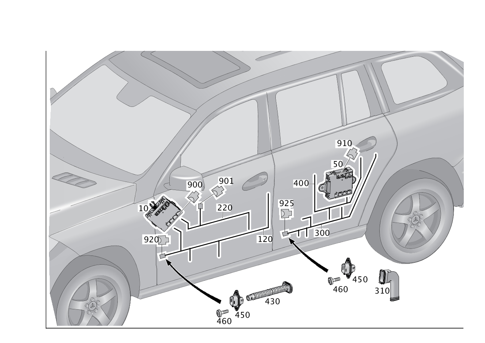

| № | Артикул | Название | Кол. | Примечание | Ограничение |
|---|---|---|---|---|---|
| 10 | A 166 900 56 05 | Блок управления (STEUERGERAET) | 1 | Дверь спереди слева Рулевое управление: Влево [672] ДЕТАЛЬ ПОСЛЕ УСТАН.ПРОВЕРИТЬ НА АКТУАЛЬНОСТЬ "ПРОШИВНОГО" ПО [697] ДЕТАЛЬ ПОСТАВЛЯЕТСЯ ТОЛЬКО/ИЛИ ТАКЖЕ КАК ЗАП.ЧАСТЬ | (803/804+-054) |
| 10 | A 166 900 74 09 | Блок управления (STEUERGERAET) | 1 | Дверь спереди слева Рулевое управление: Влево [672] ДЕТАЛЬ ПОСЛЕ УСТАН.ПРОВЕРИТЬ НА АКТУАЛЬНОСТЬ "ПРОШИВНОГО" ПО | (803/804+-054) |
| 10 | A 166 900 41 02 | Блок управления (STEUERGERAET) | 1 | Дверь спереди слева Рулевое управление: Влево [672] ДЕТАЛЬ ПОСЛЕ УСТАН.ПРОВЕРИТЬ НА АКТУАЛЬНОСТЬ "ПРОШИВНОГО" ПО [697] ДЕТАЛЬ ПОСТАВЛЯЕТСЯ ТОЛЬКО/ИЛИ ТАКЖЕ КАК ЗАП.ЧАСТЬ | 805+055 |
| 10 | A 166 900 41 02 | Блок управления (STEUERGERAET) | 1 | Дверь спереди слева Рулевое управление: Влево [672] ДЕТАЛЬ ПОСЛЕ УСТАН.ПРОВЕРИТЬ НА АКТУАЛЬНОСТЬ "ПРОШИВНОГО" ПО [697] ДЕТАЛЬ ПОСТАВЛЯЕТСЯ ТОЛЬКО/ИЛИ ТАКЖЕ КАК ЗАП.ЧАСТЬ | (806+-056) |
| 10 | A 166 900 97 14 | Блок управления (STEUERGERAET) | 1 | Дверь спереди слева Рулевое управление: Влево [672] ДЕТАЛЬ ПОСЛЕ УСТАН.ПРОВЕРИТЬ НА АКТУАЛЬНОСТЬ "ПРОШИВНОГО" ПО | (806+-056) |
| 10 | A 166 900 03 18 | Блок управления (STEUERGERAET) | 1 | Дверь спереди слева Рулевое управление: Влево [672] ДЕТАЛЬ ПОСЛЕ УСТАН.ПРОВЕРИТЬ НА АКТУАЛЬНОСТЬ "ПРОШИВНОГО" ПО [697] ДЕТАЛЬ ПОСТАВЛЯЕТСЯ ТОЛЬКО/ИЛИ ТАКЖЕ КАК ЗАП.ЧАСТЬ | 806+056 |
| 10 | A 166 900 55 11 | Блок управления (STEUERGERAET) | 1 | Дверь спереди слева Рулевое управление: Влево [672] ДЕТАЛЬ ПОСЛЕ УСТАН.ПРОВЕРИТЬ НА АКТУАЛЬНОСТЬ "ПРОШИВНОГО" ПО | 804+054 |
| 10 | A 166 900 50 12 | Блок управления (STEUERGERAET) | 1 | Дверь спереди слева Рулевое управление: Влево [672] ДЕТАЛЬ ПОСЛЕ УСТАН.ПРОВЕРИТЬ НА АКТУАЛЬНОСТЬ "ПРОШИВНОГО" ПО [697] ДЕТАЛЬ ПОСТАВЛЯЕТСЯ ТОЛЬКО/ИЛИ ТАКЖЕ КАК ЗАП.ЧАСТЬ | 804+054 |
| 10 | A 166 900 50 12 | Блок управления (STEUERGERAET) | 1 | Дверь спереди слева Рулевое управление: Влево [672] ДЕТАЛЬ ПОСЛЕ УСТАН.ПРОВЕРИТЬ НА АКТУАЛЬНОСТЬ "ПРОШИВНОГО" ПО [697] ДЕТАЛЬ ПОСТАВЛЯЕТСЯ ТОЛЬКО/ИЛИ ТАКЖЕ КАК ЗАП.ЧАСТЬ | (805+-055) |
| 10 | A 166 900 03 18 | Блок управления (STEUERGERAET) | 1 | Дверь спереди слева Рулевое управление: Влево [672] ДЕТАЛЬ ПОСЛЕ УСТАН.ПРОВЕРИТЬ НА АКТУАЛЬНОСТЬ "ПРОШИВНОГО" ПО [697] ДЕТАЛЬ ПОСТАВЛЯЕТСЯ ТОЛЬКО/ИЛИ ТАКЖЕ КАК ЗАП.ЧАСТЬ | (807/808/809/800) |
| 10 | A 166 900 60 05 | Блок управления (STEUERGERAET) | 1 | Дверь спереди справа Рулевое управление: Влево [672] ДЕТАЛЬ ПОСЛЕ УСТАН.ПРОВЕРИТЬ НА АКТУАЛЬНОСТЬ "ПРОШИВНОГО" ПО | (803/804+-054) |
| 10 | A 166 900 57 11 | Блок управления (STEUERGERAET) | 1 | Дверь спереди справа Рулевое управление: Влево [672] ДЕТАЛЬ ПОСЛЕ УСТАН.ПРОВЕРИТЬ НА АКТУАЛЬНОСТЬ "ПРОШИВНОГО" ПО | 804+054 |
| 10 | A 166 900 57 11 | Блок управления (STEUERGERAET) | 1 | Дверь спереди справа Рулевое управление: Влево [672] ДЕТАЛЬ ПОСЛЕ УСТАН.ПРОВЕРИТЬ НА АКТУАЛЬНОСТЬ "ПРОШИВНОГО" ПО | (805+-055) |
| 10 | A 166 900 43 02 | Блок управления (STEUERGERAET) | 1 | Дверь спереди справа Рулевое управление: Влево [672] ДЕТАЛЬ ПОСЛЕ УСТАН.ПРОВЕРИТЬ НА АКТУАЛЬНОСТЬ "ПРОШИВНОГО" ПО [697] ДЕТАЛЬ ПОСТАВЛЯЕТСЯ ТОЛЬКО/ИЛИ ТАКЖЕ КАК ЗАП.ЧАСТЬ | 805+055 |
| 10 | A 166 900 43 02 | Блок управления (STEUERGERAET) | 1 | Дверь спереди справа Рулевое управление: Влево [672] ДЕТАЛЬ ПОСЛЕ УСТАН.ПРОВЕРИТЬ НА АКТУАЛЬНОСТЬ "ПРОШИВНОГО" ПО [697] ДЕТАЛЬ ПОСТАВЛЯЕТСЯ ТОЛЬКО/ИЛИ ТАКЖЕ КАК ЗАП.ЧАСТЬ | (806+-056) |
| 10 | A 166 900 99 14 | Блок управления (STEUERGERAET) | 1 | Дверь спереди справа Рулевое управление: Влево [672] ДЕТАЛЬ ПОСЛЕ УСТАН.ПРОВЕРИТЬ НА АКТУАЛЬНОСТЬ "ПРОШИВНОГО" ПО | (806+-056) |
| 10 | A 166 900 05 18 | Блок управления (STEUERGERAET) | 1 | Дверь спереди справа Рулевое управление: Влево [672] ДЕТАЛЬ ПОСЛЕ УСТАН.ПРОВЕРИТЬ НА АКТУАЛЬНОСТЬ "ПРОШИВНОГО" ПО [697] ДЕТАЛЬ ПОСТАВЛЯЕТСЯ ТОЛЬКО/ИЛИ ТАКЖЕ КАК ЗАП.ЧАСТЬ | 806+056 |
| 10 | A 166 900 05 18 | Блок управления (STEUERGERAET) | 1 | Дверь спереди справа Рулевое управление: Влево [672] ДЕТАЛЬ ПОСЛЕ УСТАН.ПРОВЕРИТЬ НА АКТУАЛЬНОСТЬ "ПРОШИВНОГО" ПО [697] ДЕТАЛЬ ПОСТАВЛЯЕТСЯ ТОЛЬКО/ИЛИ ТАКЖЕ КАК ЗАП.ЧАСТЬ | (807/808/809/800) |
| 10 | A 166 900 55 05 | Блок управления (STEUERGERAET) | 1 | Дверь спереди слева Рулевое управление: Вправо [672] ДЕТАЛЬ ПОСЛЕ УСТАН.ПРОВЕРИТЬ НА АКТУАЛЬНОСТЬ "ПРОШИВНОГО" ПО | (803/804+-054) |
| 10 | A 166 900 40 02 | Блок управления (STEUERGERAET) | 1 | Дверь спереди слева Рулевое управление: Вправо [672] ДЕТАЛЬ ПОСЛЕ УСТАН.ПРОВЕРИТЬ НА АКТУАЛЬНОСТЬ "ПРОШИВНОГО" ПО | 805+055 |
| 10 | A 166 900 40 02 | Блок управления (STEUERGERAET) | 1 | Дверь спереди слева Рулевое управление: Вправо [672] ДЕТАЛЬ ПОСЛЕ УСТАН.ПРОВЕРИТЬ НА АКТУАЛЬНОСТЬ "ПРОШИВНОГО" ПО | (806+-056) |
| 10 | A 166 900 96 14 | Блок управления (STEUERGERAET) | 1 | Дверь спереди слева Рулевое управление: Вправо [672] ДЕТАЛЬ ПОСЛЕ УСТАН.ПРОВЕРИТЬ НА АКТУАЛЬНОСТЬ "ПРОШИВНОГО" ПО | (806+-056) |
| 10 | A 166 900 02 18 | Блок управления (STEUERGERAET) | 1 | Дверь спереди слева Рулевое управление: Вправо [672] ДЕТАЛЬ ПОСЛЕ УСТАН.ПРОВЕРИТЬ НА АКТУАЛЬНОСТЬ "ПРОШИВНОГО" ПО [697] ДЕТАЛЬ ПОСТАВЛЯЕТСЯ ТОЛЬКО/ИЛИ ТАКЖЕ КАК ЗАП.ЧАСТЬ | 806+056 |
| 10 | A 166 900 54 11 | Блок управления (STEUERGERAET) | 1 | Дверь спереди слева Рулевое управление: Вправо [672] ДЕТАЛЬ ПОСЛЕ УСТАН.ПРОВЕРИТЬ НА АКТУАЛЬНОСТЬ "ПРОШИВНОГО" ПО | 804+054 |
| 10 | A 166 900 54 11 | Блок управления (STEUERGERAET) | 1 | Дверь спереди слева Рулевое управление: Вправо [672] ДЕТАЛЬ ПОСЛЕ УСТАН.ПРОВЕРИТЬ НА АКТУАЛЬНОСТЬ "ПРОШИВНОГО" ПО | (805+-055) |
| 10 | A 166 900 02 18 | Блок управления (STEUERGERAET) | 1 | Дверь спереди слева Рулевое управление: Вправо [672] ДЕТАЛЬ ПОСЛЕ УСТАН.ПРОВЕРИТЬ НА АКТУАЛЬНОСТЬ "ПРОШИВНОГО" ПО [697] ДЕТАЛЬ ПОСТАВЛЯЕТСЯ ТОЛЬКО/ИЛИ ТАКЖЕ КАК ЗАП.ЧАСТЬ | (807/808/809/800) |
| 10 | A 166 900 61 05 | Блок управления (STEUERGERAET) | 1 | Дверь спереди справа Рулевое управление: Вправо [672] ДЕТАЛЬ ПОСЛЕ УСТАН.ПРОВЕРИТЬ НА АКТУАЛЬНОСТЬ "ПРОШИВНОГО" ПО | (803/804+-054) |
| 10 | A 166 900 76 09 | Блок управления (STEUERGERAET) | 1 | Дверь спереди справа Рулевое управление: Вправо [672] ДЕТАЛЬ ПОСЛЕ УСТАН.ПРОВЕРИТЬ НА АКТУАЛЬНОСТЬ "ПРОШИВНОГО" ПО | (803/804+-054) |
| 10 | A 166 900 58 11 | Блок управления (STEUERGERAET) | 1 | Дверь спереди справа Рулевое управление: Вправо [672] ДЕТАЛЬ ПОСЛЕ УСТАН.ПРОВЕРИТЬ НА АКТУАЛЬНОСТЬ "ПРОШИВНОГО" ПО | 804+054 |
| 10 | A 166 900 52 12 | Блок управления (STEUERGERAET) | 1 | Дверь спереди справа Рулевое управление: Вправо [672] ДЕТАЛЬ ПОСЛЕ УСТАН.ПРОВЕРИТЬ НА АКТУАЛЬНОСТЬ "ПРОШИВНОГО" ПО [697] ДЕТАЛЬ ПОСТАВЛЯЕТСЯ ТОЛЬКО/ИЛИ ТАКЖЕ КАК ЗАП.ЧАСТЬ | 804+054 |
| 10 | A 166 900 52 12 | Блок управления (STEUERGERAET) | 1 | Дверь спереди справа Рулевое управление: Вправо [672] ДЕТАЛЬ ПОСЛЕ УСТАН.ПРОВЕРИТЬ НА АКТУАЛЬНОСТЬ "ПРОШИВНОГО" ПО [697] ДЕТАЛЬ ПОСТАВЛЯЕТСЯ ТОЛЬКО/ИЛИ ТАКЖЕ КАК ЗАП.ЧАСТЬ | (805+-055) |
| 10 | A 166 900 44 02 | Блок управления (STEUERGERAET) | 1 | Дверь спереди справа Рулевое управление: Вправо [672] ДЕТАЛЬ ПОСЛЕ УСТАН.ПРОВЕРИТЬ НА АКТУАЛЬНОСТЬ "ПРОШИВНОГО" ПО | 805+055 |
| 10 | A 166 900 44 02 | Блок управления (STEUERGERAET) | 1 | Дверь спереди справа Рулевое управление: Вправо [672] ДЕТАЛЬ ПОСЛЕ УСТАН.ПРОВЕРИТЬ НА АКТУАЛЬНОСТЬ "ПРОШИВНОГО" ПО | (806+-056) |
| 10 | A 166 900 00 15 | Блок управления (STEUERGERAET) | 1 | Дверь спереди справа Рулевое управление: Вправо [672] ДЕТАЛЬ ПОСЛЕ УСТАН.ПРОВЕРИТЬ НА АКТУАЛЬНОСТЬ "ПРОШИВНОГО" ПО [697] ДЕТАЛЬ ПОСТАВЛЯЕТСЯ ТОЛЬКО/ИЛИ ТАКЖЕ КАК ЗАП.ЧАСТЬ | (806+-056) |
| 10 | A 166 900 06 18 | Блок управления (STEUERGERAET) | 1 | Дверь спереди справа Рулевое управление: Вправо [672] ДЕТАЛЬ ПОСЛЕ УСТАН.ПРОВЕРИТЬ НА АКТУАЛЬНОСТЬ "ПРОШИВНОГО" ПО [697] ДЕТАЛЬ ПОСТАВЛЯЕТСЯ ТОЛЬКО/ИЛИ ТАКЖЕ КАК ЗАП.ЧАСТЬ | 806+056 |
| 10 | A 166 900 06 18 | Блок управления (STEUERGERAET) | 1 | Дверь спереди справа Рулевое управление: Вправо [672] ДЕТАЛЬ ПОСЛЕ УСТАН.ПРОВЕРИТЬ НА АКТУАЛЬНОСТЬ "ПРОШИВНОГО" ПО [697] ДЕТАЛЬ ПОСТАВЛЯЕТСЯ ТОЛЬКО/ИЛИ ТАКЖЕ КАК ЗАП.ЧАСТЬ | (807/808/809/800) |
| 10 | A 166 900 56 05 | Блок управления (STEUERGERAET) | 1 | Дверь спереди слева Рулевое управление: Вправо [672] ДЕТАЛЬ ПОСЛЕ УСТАН.ПРОВЕРИТЬ НА АКТУАЛЬНОСТЬ "ПРОШИВНОГО" ПО [697] ДЕТАЛЬ ПОСТАВЛЯЕТСЯ ТОЛЬКО/ИЛИ ТАКЖЕ КАК ЗАП.ЧАСТЬ | (234/237/876/883/885)+(803/804+-054) |
| 10 | A 166 900 74 09 | Блок управления (STEUERGERAET) | 1 | Дверь спереди слева Рулевое управление: Вправо [672] ДЕТАЛЬ ПОСЛЕ УСТАН.ПРОВЕРИТЬ НА АКТУАЛЬНОСТЬ "ПРОШИВНОГО" ПО | (234/237/876/883/885)+(803/804+-054) |
| 10 | A 166 900 41 02 | Блок управления (STEUERGERAET) | 1 | Дверь спереди слева Рулевое управление: Вправо [672] ДЕТАЛЬ ПОСЛЕ УСТАН.ПРОВЕРИТЬ НА АКТУАЛЬНОСТЬ "ПРОШИВНОГО" ПО [697] ДЕТАЛЬ ПОСТАВЛЯЕТСЯ ТОЛЬКО/ИЛИ ТАКЖЕ КАК ЗАП.ЧАСТЬ | (234/237/876/883/885)+(805+055) |
| 10 | A 166 900 41 02 | Блок управления (STEUERGERAET) | 1 | Дверь спереди слева Рулевое управление: Вправо [672] ДЕТАЛЬ ПОСЛЕ УСТАН.ПРОВЕРИТЬ НА АКТУАЛЬНОСТЬ "ПРОШИВНОГО" ПО [697] ДЕТАЛЬ ПОСТАВЛЯЕТСЯ ТОЛЬКО/ИЛИ ТАКЖЕ КАК ЗАП.ЧАСТЬ | (234/237/876/883/885)+(806+-056) |
| 10 | A 166 900 97 14 | Блок управления (STEUERGERAET) | 1 | Дверь спереди слева Рулевое управление: Вправо [672] ДЕТАЛЬ ПОСЛЕ УСТАН.ПРОВЕРИТЬ НА АКТУАЛЬНОСТЬ "ПРОШИВНОГО" ПО | (234/237/876/883/885)+(806+-056) |
| 10 | A 166 900 03 18 | Блок управления (STEUERGERAET) | 1 | Дверь спереди слева Рулевое управление: Вправо [672] ДЕТАЛЬ ПОСЛЕ УСТАН.ПРОВЕРИТЬ НА АКТУАЛЬНОСТЬ "ПРОШИВНОГО" ПО [697] ДЕТАЛЬ ПОСТАВЛЯЕТСЯ ТОЛЬКО/ИЛИ ТАКЖЕ КАК ЗАП.ЧАСТЬ | (234/237/876/883/885)+806+056 |
| 10 | A 166 900 55 11 | Блок управления (STEUERGERAET) | 1 | Дверь спереди слева Рулевое управление: Вправо [672] ДЕТАЛЬ ПОСЛЕ УСТАН.ПРОВЕРИТЬ НА АКТУАЛЬНОСТЬ "ПРОШИВНОГО" ПО | 804+054+(234/237/876/883/885) |
| 10 | A 166 900 50 12 | Блок управления (STEUERGERAET) | 1 | Дверь спереди слева Рулевое управление: Вправо [672] ДЕТАЛЬ ПОСЛЕ УСТАН.ПРОВЕРИТЬ НА АКТУАЛЬНОСТЬ "ПРОШИВНОГО" ПО [697] ДЕТАЛЬ ПОСТАВЛЯЕТСЯ ТОЛЬКО/ИЛИ ТАКЖЕ КАК ЗАП.ЧАСТЬ | 804+054+(234/237/876/883/885) |
| 10 | A 166 900 50 12 | Блок управления (STEUERGERAET) | 1 | Дверь спереди слева Рулевое управление: Вправо [672] ДЕТАЛЬ ПОСЛЕ УСТАН.ПРОВЕРИТЬ НА АКТУАЛЬНОСТЬ "ПРОШИВНОГО" ПО [697] ДЕТАЛЬ ПОСТАВЛЯЕТСЯ ТОЛЬКО/ИЛИ ТАКЖЕ КАК ЗАП.ЧАСТЬ | (234/237/876/883/885)+(805+-055) |
| 10 | A 166 900 03 18 | Блок управления (STEUERGERAET) | 1 | Дверь спереди слева Рулевое управление: Вправо [672] ДЕТАЛЬ ПОСЛЕ УСТАН.ПРОВЕРИТЬ НА АКТУАЛЬНОСТЬ "ПРОШИВНОГО" ПО [697] ДЕТАЛЬ ПОСТАВЛЯЕТСЯ ТОЛЬКО/ИЛИ ТАКЖЕ КАК ЗАП.ЧАСТЬ | (234/237/876/883/885)+(807/808/809/800) |
| 10 | A 166 900 61 05 | Блок управления (STEUERGERAET) | 1 | Дверь спереди справа Рулевое управление: Влево [672] ДЕТАЛЬ ПОСЛЕ УСТАН.ПРОВЕРИТЬ НА АКТУАЛЬНОСТЬ "ПРОШИВНОГО" ПО | (234/237/876/883/885)+(803/804+-054) |
| 10 | A 166 900 76 09 | Блок управления (STEUERGERAET) | 1 | Дверь спереди справа Рулевое управление: Влево [672] ДЕТАЛЬ ПОСЛЕ УСТАН.ПРОВЕРИТЬ НА АКТУАЛЬНОСТЬ "ПРОШИВНОГО" ПО | (234/237/876/883/885)+(803/804+-054) |
| 10 | A 166 900 58 11 | Блок управления (STEUERGERAET) | 1 | Дверь спереди справа Рулевое управление: Влево [672] ДЕТАЛЬ ПОСЛЕ УСТАН.ПРОВЕРИТЬ НА АКТУАЛЬНОСТЬ "ПРОШИВНОГО" ПО | 804+054+(234/237/876/883/885) |
| 10 | A 166 900 52 12 | Блок управления (STEUERGERAET) | 1 | Дверь спереди справа Рулевое управление: Влево [672] ДЕТАЛЬ ПОСЛЕ УСТАН.ПРОВЕРИТЬ НА АКТУАЛЬНОСТЬ "ПРОШИВНОГО" ПО [697] ДЕТАЛЬ ПОСТАВЛЯЕТСЯ ТОЛЬКО/ИЛИ ТАКЖЕ КАК ЗАП.ЧАСТЬ | 804+054+(234/237/876/883/885) |
| 10 | A 166 900 52 12 | Блок управления (STEUERGERAET) | 1 | Дверь спереди справа Рулевое управление: Влево [672] ДЕТАЛЬ ПОСЛЕ УСТАН.ПРОВЕРИТЬ НА АКТУАЛЬНОСТЬ "ПРОШИВНОГО" ПО [697] ДЕТАЛЬ ПОСТАВЛЯЕТСЯ ТОЛЬКО/ИЛИ ТАКЖЕ КАК ЗАП.ЧАСТЬ | (234/237/876/883/885)+(805+-055) |
| 10 | A 166 900 44 02 | Блок управления (STEUERGERAET) | 1 | Дверь спереди справа Рулевое управление: Влево [672] ДЕТАЛЬ ПОСЛЕ УСТАН.ПРОВЕРИТЬ НА АКТУАЛЬНОСТЬ "ПРОШИВНОГО" ПО | (234/237/876/883/885)+(805+055) |
| 10 | A 166 900 44 02 | Блок управления (STEUERGERAET) | 1 | Дверь спереди справа Рулевое управление: Влево [672] ДЕТАЛЬ ПОСЛЕ УСТАН.ПРОВЕРИТЬ НА АКТУАЛЬНОСТЬ "ПРОШИВНОГО" ПО | (234/237/876/883/885)+(806+-056) |
| 10 | A 166 900 00 15 | Блок управления (STEUERGERAET) | 1 | Дверь спереди справа Рулевое управление: Влево [672] ДЕТАЛЬ ПОСЛЕ УСТАН.ПРОВЕРИТЬ НА АКТУАЛЬНОСТЬ "ПРОШИВНОГО" ПО [697] ДЕТАЛЬ ПОСТАВЛЯЕТСЯ ТОЛЬКО/ИЛИ ТАКЖЕ КАК ЗАП.ЧАСТЬ | (234/237/876/883/885)+(806+-056) |
| 10 | A 166 900 06 18 | Блок управления (STEUERGERAET) | 1 | Дверь спереди справа Рулевое управление: Влево [672] ДЕТАЛЬ ПОСЛЕ УСТАН.ПРОВЕРИТЬ НА АКТУАЛЬНОСТЬ "ПРОШИВНОГО" ПО [697] ДЕТАЛЬ ПОСТАВЛЯЕТСЯ ТОЛЬКО/ИЛИ ТАКЖЕ КАК ЗАП.ЧАСТЬ | (234/237/876/883/885)+806+056 |
| 10 | A 166 900 06 18 | Блок управления (STEUERGERAET) | 1 | Дверь спереди справа Рулевое управление: Влево [672] ДЕТАЛЬ ПОСЛЕ УСТАН.ПРОВЕРИТЬ НА АКТУАЛЬНОСТЬ "ПРОШИВНОГО" ПО [697] ДЕТАЛЬ ПОСТАВЛЯЕТСЯ ТОЛЬКО/ИЛИ ТАКЖЕ КАК ЗАП.ЧАСТЬ | (234/237/876/883/885)+(807/808/809/800) |
| 50 | A 166 900 57 05 | Блок управления (STEUERGERAET) | 1 | Дверь сзади слева [672] ДЕТАЛЬ ПОСЛЕ УСТАН.ПРОВЕРИТЬ НА АКТУАЛЬНОСТЬ "ПРОШИВНОГО" ПО | -(054/055) |
| 50 | A 166 900 59 11 | Блок управления (STEUERGERAET) | 1 | Дверь сзади слева [672] ДЕТАЛЬ ПОСЛЕ УСТАН.ПРОВЕРИТЬ НА АКТУАЛЬНОСТЬ "ПРОШИВНОГО" ПО [697] ДЕТАЛЬ ПОСТАВЛЯЕТСЯ ТОЛЬКО/ИЛИ ТАКЖЕ КАК ЗАП.ЧАСТЬ | 804+054 |
| 50 | A 166 900 59 11 | Блок управления (STEUERGERAET) | 1 | Дверь сзади слева [672] ДЕТАЛЬ ПОСЛЕ УСТАН.ПРОВЕРИТЬ НА АКТУАЛЬНОСТЬ "ПРОШИВНОГО" ПО [697] ДЕТАЛЬ ПОСТАВЛЯЕТСЯ ТОЛЬКО/ИЛИ ТАКЖЕ КАК ЗАП.ЧАСТЬ | (805+-055) |
| 50 | A 166 900 62 07 | Блок управления (STEUERGERAET) | 1 | Дверь сзади слева [672] ДЕТАЛЬ ПОСЛЕ УСТАН.ПРОВЕРИТЬ НА АКТУАЛЬНОСТЬ "ПРОШИВНОГО" ПО [697] ДЕТАЛЬ ПОСТАВЛЯЕТСЯ ТОЛЬКО/ИЛИ ТАКЖЕ КАК ЗАП.ЧАСТЬ | (805+055/806/807/808/809/800) |
| 50 | A 166 900 60 11 | Блок управления (STEUERGERAET) | 1 | Дверь сзади слева [672] ДЕТАЛЬ ПОСЛЕ УСТАН.ПРОВЕРИТЬ НА АКТУАЛЬНОСТЬ "ПРОШИВНОГО" ПО | 804+054+(883/885/876) |
| 50 | A 166 900 54 12 | Блок управления (STEUERGERAET) | 1 | Дверь сзади слева [672] ДЕТАЛЬ ПОСЛЕ УСТАН.ПРОВЕРИТЬ НА АКТУАЛЬНОСТЬ "ПРОШИВНОГО" ПО | 804+054+(883/885/876) |
| 50 | A 166 900 54 12 | Блок управления (STEUERGERAET) | 1 | Дверь сзади слева [672] ДЕТАЛЬ ПОСЛЕ УСТАН.ПРОВЕРИТЬ НА АКТУАЛЬНОСТЬ "ПРОШИВНОГО" ПО | (883/885/876)+(805+-055) |
| 50 | A 166 900 63 07 | Блок управления (STEUERGERAET) | 1 | Дверь сзади слева [672] ДЕТАЛЬ ПОСЛЕ УСТАН.ПРОВЕРИТЬ НА АКТУАЛЬНОСТЬ "ПРОШИВНОГО" ПО [697] ДЕТАЛЬ ПОСТАВЛЯЕТСЯ ТОЛЬКО/ИЛИ ТАКЖЕ КАК ЗАП.ЧАСТЬ | (883/885/876)+(805+055/806/807/808/809/800) |
| 50 | A 166 900 62 05 | Блок управления (STEUERGERAET) | 1 | ДВЕРЬ ЗАДНЯЯ ПРАВАЯ [672] ДЕТАЛЬ ПОСЛЕ УСТАН.ПРОВЕРИТЬ НА АКТУАЛЬНОСТЬ "ПРОШИВНОГО" ПО [697] ДЕТАЛЬ ПОСТАВЛЯЕТСЯ ТОЛЬКО/ИЛИ ТАКЖЕ КАК ЗАП.ЧАСТЬ | -(054/055) |
| 50 | A 166 900 58 05 | Блок управления (STEUERGERAET) | 1 | Дверь сзади слева [672] ДЕТАЛЬ ПОСЛЕ УСТАН.ПРОВЕРИТЬ НА АКТУАЛЬНОСТЬ "ПРОШИВНОГО" ПО | (883/885/876)+-(054/055) |
| 50 | A 166 900 78 09 | Блок управления (STEUERGERAET) | 1 | Дверь сзади слева [672] ДЕТАЛЬ ПОСЛЕ УСТАН.ПРОВЕРИТЬ НА АКТУАЛЬНОСТЬ "ПРОШИВНОГО" ПО | (883/885/876)+-(054/055) |
| 50 | A 166 900 63 05 | Блок управления (STEUERGERAET) | 1 | ДВЕРЬ ЗАДНЯЯ ПРАВАЯ [672] ДЕТАЛЬ ПОСЛЕ УСТАН.ПРОВЕРИТЬ НА АКТУАЛЬНОСТЬ "ПРОШИВНОГО" ПО | (883/885/876)+-(054/055) |
| 50 | A 166 900 80 09 | Блок управления (STEUERGERAET) | 1 | ДВЕРЬ ЗАДНЯЯ ПРАВАЯ [672] ДЕТАЛЬ ПОСЛЕ УСТАН.ПРОВЕРИТЬ НА АКТУАЛЬНОСТЬ "ПРОШИВНОГО" ПО | (883/885/876)+-(054/055) |
| 50 | A 166 900 61 11 | Блок управления (STEUERGERAET) | 1 | Дверь сзади справа [672] ДЕТАЛЬ ПОСЛЕ УСТАН.ПРОВЕРИТЬ НА АКТУАЛЬНОСТЬ "ПРОШИВНОГО" ПО | 804+054 |
| 50 | A 166 900 61 11 | Блок управления (STEUERGERAET) | 1 | Дверь сзади справа [672] ДЕТАЛЬ ПОСЛЕ УСТАН.ПРОВЕРИТЬ НА АКТУАЛЬНОСТЬ "ПРОШИВНОГО" ПО | (805+-055) |
| 50 | A 166 900 64 07 | Блок управления (STEUERGERAET) | 1 | Дверь сзади справа [672] ДЕТАЛЬ ПОСЛЕ УСТАН.ПРОВЕРИТЬ НА АКТУАЛЬНОСТЬ "ПРОШИВНОГО" ПО [697] ДЕТАЛЬ ПОСТАВЛЯЕТСЯ ТОЛЬКО/ИЛИ ТАКЖЕ КАК ЗАП.ЧАСТЬ | (805+055/806/807/808/809/800) |
| 50 | A 166 900 62 11 | Блок управления (STEUERGERAET) | 1 | Дверь сзади справа [672] ДЕТАЛЬ ПОСЛЕ УСТАН.ПРОВЕРИТЬ НА АКТУАЛЬНОСТЬ "ПРОШИВНОГО" ПО | 804+054+(883/885/876) |
| 50 | A 166 900 56 12 | Блок управления (STEUERGERAET) | 1 | Дверь сзади справа [672] ДЕТАЛЬ ПОСЛЕ УСТАН.ПРОВЕРИТЬ НА АКТУАЛЬНОСТЬ "ПРОШИВНОГО" ПО | 804+054+(883/885/876) |
| 50 | A 166 900 56 12 | Блок управления (STEUERGERAET) | 1 | Дверь сзади справа [672] ДЕТАЛЬ ПОСЛЕ УСТАН.ПРОВЕРИТЬ НА АКТУАЛЬНОСТЬ "ПРОШИВНОГО" ПО | (883/885/876)+(805+-055) |
| 50 | A 166 900 65 07 | Блок управления (STEUERGERAET) | 1 | Дверь сзади справа [672] ДЕТАЛЬ ПОСЛЕ УСТАН.ПРОВЕРИТЬ НА АКТУАЛЬНОСТЬ "ПРОШИВНОГО" ПО [697] ДЕТАЛЬ ПОСТАВЛЯЕТСЯ ТОЛЬКО/ИЛИ ТАКЖЕ КАК ЗАП.ЧАСТЬ | (883/885/876)+(805+055/806/807/808/809/800) |
| 120 | A 166 440 19 08 | Электрический жгут (ELEKTRISCHER LEITUNGSSATZ) | 1 | Дверь спереди слева, разъем двери к блоку управления и потребителю Рулевое управление: Влево | (802/803/804/805+-055)+-(501/811) |
| 120 | A 166 540 39 03 | Электрический жгут (ELEKTRISCHER LEITUNGSSATZ) | 1 | Дверь спереди слева, разъем двери к блоку управления и потребителю Рулевое управление: Влево | (805+055/806/807/808/809/800)+-(501/811) |
| 120 | A 166 540 40 03 | Электрический жгут (ELEKTRISCHER LEITUNGSSATZ) | 1 | Дверь спереди слева, разъем двери к блоку управления и потребителю Рулевое управление: Влево | (810+(805+055/806/807/808/809/800))+-(501/811) |
| 120 | A 166 540 42 03 | Электрический жгут (ELEKTRISCHER LEITUNGSSATZ) | 1 | Дверь спереди слева, разъем двери к блоку управления и потребителю Рулевое управление: Влево | (883+(805+055/806/807/808/809/800))+-(501/811) |
| 120 | A 166 540 44 03 | Электрический жгут (ELEKTRISCHER LEITUNGSSATZ) | 1 | Дверь спереди слева, разъем двери к блоку управления и потребителю Рулевое управление: Влево | (810+883+(805+055/806/807/808/809/800))+-(501/811) |
| 120 | A 166 540 45 03 | Электрический жгут (ELEKTRISCHER LEITUNGSSATZ) | 1 | Дверь спереди слева, разъем двери к блоку управления и потребителю | (889+883+(805+055/806/807/808/809/800))+-(501/811) |
| 120 | A 166 540 46 03 | Электрический жгут (ELEKTRISCHER LEITUNGSSATZ) | 1 | Дверь спереди слева, разъем двери к блоку управления и потребителю | (810+889+883+(805+055/806/807/808/809/800))+-(501/811) |
| 120 | A 292 540 05 00 | Электрический жгут (ELEKTRISCHER LEITUNGSSATZ) | 1 | Дверь спереди слева, разъем двери к блоку управления и потребителю Рулевое управление: Вправо | (810+(805+055/806/807/808/809/800))+-(501/811) |
| 120 | A 292 540 06 00 | Электрический жгут (ELEKTRISCHER LEITUNGSSATZ) | 1 | Дверь спереди слева, разъем двери к блоку управления и потребителю Рулевое управление: Вправо | (883+(805+055/806/807/808/809/800))+-(501/811) |
| 120 | A 292 540 12 00 | Электрический жгут (ELEKTRISCHER LEITUNGSSATZ) | 1 | Дверь спереди слева, разъем двери к блоку управления и потребителю Рулевое управление: Вправо | (885+(805+055/806/807/808/809/800))+-(501/811) |
| 120 | A 292 540 07 00 | Электрический жгут (ELEKTRISCHER LEITUNGSSATZ) | 1 | Дверь спереди слева, разъем двери к блоку управления и потребителю Рулевое управление: Вправо | (810+883+(805+055/806/807/808/809/800))+-(501/811) |
| 120 | A 292 540 16 00 | Электрический жгут | 1 | Дверь спереди слева, разъем двери к блоку управления и потребителю Рулевое управление: Вправо | (810+883+885+(805+055/806/807/808/809/800))+-(501/811) |
| 120 | A 166 540 58 03 | Электрический жгут (ELEKTRISCHER LEITUNGSSATZ) | 1 | Дверь спереди слева, разъем двери к блоку управления и потребителю Рулевое управление: Вправо | (889+885+(805+055/806/807/808/809/800))+-(501/811) |
| 120 | A 292 540 14 00 | Электрический жгут | 1 | Дверь спереди слева, разъем двери к блоку управления и потребителю Рулевое управление: Вправо | (810+885+(805+055/806/807/808/809/800))+-(501/811) |
| 120 | A 292 540 13 00 | Электрический жгут | 1 | Дверь спереди слева, разъем двери к блоку управления и потребителю Рулевое управление: Вправо | (883+885+(805+055/806/807/808/809/800))+-(501/811) |
| 120 | A 166 540 60 03 | Электрический жгут (ELEKTRISCHER LEITUNGSSATZ) | 1 | Дверь спереди слева, разъем двери к блоку управления и потребителю Рулевое управление: Вправо | (810+889+885+(805+055/806/807/808/809/800))+-(501/811) |
| 120 | A 166 540 70 03 | Электрический жгут (ELEKTRISCHER LEITUNGSSATZ) | 1 | Дверь спереди слева, разъем двери к блоку управления и потребителю Рулевое управление: Вправо | (810+889+885+883+(805+055/806/807/808/809/800))+-(501/811) |
| 120 | A 166 540 61 03 | Электрический жгут (ELEKTRISCHER LEITUNGSSATZ) | 1 | Дверь спереди слева, разъем двери к блоку управления и потребителю Рулевое управление: Вправо | (885+889+883+(805+055/806/807/808/809/800))+-(501/811) |
| 120 | A 166 440 27 08 | Электрический жгут (ELEKTRISCHER LEITUNGSSATZ) | 1 | Дверь спереди справа, разъем двери к блоку управления и потребителю Рулевое управление: Влево | (802/803/804/805+-055)+-(501/811) |
| 120 | A 166 540 40 03 | Электрический жгут (ELEKTRISCHER LEITUNGSSATZ) | 1 | Дверь спереди справа, разъем двери к блоку управления и потребителю Рулевое управление: Вправо | (810+(805+055/806/807/808/809/800))+-(501/811) |
| 120 | A 166 540 42 03 | Электрический жгут (ELEKTRISCHER LEITUNGSSATZ) | 1 | Дверь спереди справа, разъем двери к блоку управления и потребителю Рулевое управление: Вправо | (883+(805+055/806/807/808/809/800))+-(501/811) |
| 120 | A 166 540 55 03 | Электрический жгут (ELEKTRISCHER LEITUNGSSATZ) | 1 | Дверь спереди справа, разъем двери к блоку управления и потребителю Рулевое управление: Вправо | (885+(805+055/806/807/808/809/800))+-(501/811) |
| 120 | A 166 540 41 03 | Электрический жгут (ELEKTRISCHER LEITUNGSSATZ) | 1 | Дверь спереди справа, разъем двери к блоку управления и потребителю | (889+(805+055/806/807/808/809/800))+-(501/811) |
| 120 | A 166 540 43 03 | Электрический жгут (ELEKTRISCHER LEITUNGSSATZ) | 1 | Дверь спереди справа, разъем двери к блоку управления и потребителю | (810+889+(805+055/806/807/808/809/800))+-(501/811) |
| 120 | A 166 540 56 03 | Электрический жгут | 1 | Дверь спереди справа, разъем двери к блоку управления и потребителю Рулевое управление: Вправо | (885+883+(805+055/806/807/808/809/800))+-(501/811) |
| 120 | A 166 540 44 03 | Электрический жгут (ELEKTRISCHER LEITUNGSSATZ) | 1 | Дверь спереди справа, разъем двери к блоку управления и потребителю Рулевое управление: Вправо | (810+883+(805+055/806/807/808/809/800))+-(501/811) |
| 120 | A 166 540 57 03 | Электрический жгут (ELEKTRISCHER LEITUNGSSATZ) | 1 | Дверь спереди справа, разъем двери к блоку управления и потребителю Рулевое управление: Вправо | (810+885+(805+055/806/807/808/809/800))+-(501/811) |
| 120 | A 166 540 45 03 | Электрический жгут (ELEKTRISCHER LEITUNGSSATZ) | 1 | Дверь спереди справа, разъем двери к блоку управления и потребителю | (889+883+(805+055/806/807/808/809/800))+-(501/811) |
| 120 | A 166 540 58 03 | Электрический жгут (ELEKTRISCHER LEITUNGSSATZ) | 1 | Дверь спереди справа, разъем двери к блоку управления и потребителю Рулевое управление: Вправо | (885+889+(805+055/806/807/808/809/800))+-(501/811) |
| 120 | A 166 540 59 03 | Электрический жгут | 1 | Дверь спереди справа, разъем двери к блоку управления и потребителю Рулевое управление: Вправо | (810+883+885+(805+055/806/807/808/809/800))+-(501/811) |
| 120 | A 166 540 46 03 | Электрический жгут (ELEKTRISCHER LEITUNGSSATZ) | 1 | Дверь спереди справа, разъем двери к блоку управления и потребителю | (810+889+883+(805+055/806/807/808/809/800))+-(501/811) |
| 120 | A 166 540 60 03 | Электрический жгут (ELEKTRISCHER LEITUNGSSATZ) | 1 | Дверь спереди справа, разъем двери к блоку управления и потребителю Рулевое управление: Вправо | (810+889+885+(805+055/806/807/808/809/800))+-(501/811) |
| 120 | A 166 540 61 03 | Электрический жгут (ELEKTRISCHER LEITUNGSSATZ) | 1 | Дверь спереди справа, разъем двери к блоку управления и потребителю Рулевое управление: Вправо | (889+885+883+(805+055/806/807/808/809/800))+-(501/811) |
| 120 | A 166 540 70 03 | Электрический жгут (ELEKTRISCHER LEITUNGSSATZ) | 1 | Дверь спереди справа, разъем двери к блоку управления и потребителю Рулевое управление: Вправо | (810+889+885+883+(805+055/806/807/808/809/800))+-(501/811) |
| 120 | A 292 540 04 00 | Электрический жгут (ELEKTRISCHER LEITUNGSSATZ) | 1 | Дверь спереди справа, разъем двери к блоку управления и потребителю Рулевое управление: Влево | (805+055/806/807/808/809/800)+-(501/810/811) |
| 120 | A 292 540 05 00 | Электрический жгут (ELEKTRISCHER LEITUNGSSATZ) | 1 | Дверь спереди справа, разъем двери к блоку управления и потребителю Рулевое управление: Влево | (810+(805+055/806/807/808/809/800))+-(501/811) |
| 120 | A 292 540 06 00 | Электрический жгут (ELEKTRISCHER LEITUNGSSATZ) | 1 | Дверь спереди справа, разъем двери к блоку управления и потребителю Рулевое управление: Влево | (883+(805+055/806/807/808/809/800))+-(501/811) |
| 120 | A 292 540 07 00 | Электрический жгут (ELEKTRISCHER LEITUNGSSATZ) | 1 | Дверь спереди справа, разъем двери к блоку управления и потребителю Рулевое управление: Влево | (810+883+(805+055/806/807/808/809/800))+-(501/811) |
| 120 | A 166 440 03 09 | Электрический жгут (ELEKTRISCHER LEITUNGSSATZ) | 1 | Дверь спереди слева, разъем двери к блоку управления и потребителю Рулевое управление: Влево | (810+(802/803/804/805+-055))+-(501/811) |
| 120 | A 166 440 59 08 | Электрический жгут (ELEKTRISCHER LEITUNGSSATZ) | 1 | Дверь спереди справа, разъем двери к блоку управления и потребителю Рулевое управление: Влево | (810+(802/803/804/805+-055))+-(501/811) |
| 120 | A 166 440 21 08 | Электрический жгут (ELEKTRISCHER LEITUNGSSATZ) | 1 | Дверь спереди слева, разъем двери к блоку управления и потребителю Рулевое управление: Влево | (889+(802/803))+-(501/811) |
| 120 | A 166 440 24 35 | Электрический жгут (ELEKTRISCHER LEITUNGSSATZ) | 1 | Дверь спереди слева, разъем двери к блоку управления и потребителю Рулевое управление: Влево | (889+(804/805+-055))+-(501/811) |
| 120 | A 166 440 31 08 | Электрический жгут (ELEKTRISCHER LEITUNGSSATZ) | 1 | Дверь спереди справа, разъем двери к блоку управления и потребителю Рулевое управление: Влево | (889+(802/803/804/805+-055))+-(501/811) |
| 120 | A 166 440 18 08 | Электрический жгут (ELEKTRISCHER LEITUNGSSATZ) | 1 | Дверь спереди слева, разъем двери к блоку управления и потребителю Рулевое управление: Влево [402] БОЛЬШЕ НЕ ПОСТАВЛЯЕТСЯ | (883+(802/803/804/805+-055))+-(501/811) |
| 120 | A 166 440 22 08 | Электрический жгут (ELEKTRISCHER LEITUNGSSATZ) | 1 | Дверь спереди справа, разъем двери к блоку управления и потребителю Рулевое управление: Влево [402] БОЛЬШЕ НЕ ПОСТАВЛЯЕТСЯ | (883+(802/803/804/805+-055))+-(501/811) |
| 120 | A 166 440 53 08 | Электрический жгут (ELEKTRISCHER LEITUNGSSATZ) | 1 | Дверь спереди слева, разъем двери к блоку управления и потребителю Рулевое управление: Влево | (810+889+(802/803))+-(501/811) |
| 120 | A 166 440 25 35 | Электрический жгут (ELEKTRISCHER LEITUNGSSATZ) | 1 | Дверь спереди слева, разъем двери к блоку управления и потребителю Рулевое управление: Влево | (810+889+(804/805+-055))+-(501/811) |
| 120 | A 166 440 60 08 | Электрический жгут (ELEKTRISCHER LEITUNGSSATZ) | 1 | Дверь спереди справа, разъем двери к блоку управления и потребителю Рулевое управление: Влево | (810+889+(802/803/804/805+-055))+-(501/811) |
| 120 | A 166 440 54 08 | Электрический жгут (ELEKTRISCHER LEITUNGSSATZ) | 1 | Дверь спереди слева, разъем двери к блоку управления и потребителю Рулевое управление: Влево [402] БОЛЬШЕ НЕ ПОСТАВЛЯЕТСЯ | (810+883+(802/803/804/805+-055))+-(501/811) |
| 120 | A 166 440 62 08 | Электрический жгут (ELEKTRISCHER LEITUNGSSATZ) | 1 | Дверь спереди справа, разъем двери к блоку управления и потребителю Рулевое управление: Влево | (810+883+(802/803/804/805+-055))+-(501/811) |
| 120 | A 166 440 20 08 | Электрический жгут (ELEKTRISCHER LEITUNGSSATZ) | 1 | Дверь спереди слева, разъем двери к блоку управления и потребителю Рулевое управление: Влево [402] БОЛЬШЕ НЕ ПОСТАВЛЯЕТСЯ | (889+883+(802/803))+-(501/811) |
| 120 | A 166 440 26 35 | Электрический жгут (ELEKTRISCHER LEITUNGSSATZ) | 1 | Дверь спереди слева, разъем двери к блоку управления и потребителю Рулевое управление: Влево | (889+883+(804/805+-055))+-(501/811) |
| 120 | A 166 440 24 08 | Электрический жгут (ELEKTRISCHER LEITUNGSSATZ) | 1 | Дверь спереди справа, разъем двери к блоку управления и потребителю Рулевое управление: Влево | (889+883+(802/803/804/805+-055))+-(501/811) |
| 120 | A 166 440 56 08 | Электрический жгут (ELEKTRISCHER LEITUNGSSATZ) | 1 | Дверь спереди слева, разъем двери к блоку управления и потребителю Рулевое управление: Влево [402] БОЛЬШЕ НЕ ПОСТАВЛЯЕТСЯ | (810+889+883+(802/803))+-(501/811) |
| 120 | A 166 440 27 35 | Электрический жгут (ELEKTRISCHER LEITUNGSSATZ) | 1 | Дверь спереди слева, разъем двери к блоку управления и потребителю Рулевое управление: Влево [402] БОЛЬШЕ НЕ ПОСТАВЛЯЕТСЯ | (810+889+883+(804/805+-055))+-(501/811) |
| 120 | A 166 440 61 08 | Электрический жгут (ELEKTRISCHER LEITUNGSSATZ) | 1 | Дверь спереди справа, разъем двери к блоку управления и потребителю Рулевое управление: Влево | (810+889+883+(802/803/804/805+-055))+-(501/811) |
| 120 | A 166 440 11 10 | Электрический жгут (ELEKTRISCHER LEITUNGSSATZ) | 1 | ДВЕРЬ ПЕРЕДНЯЯ ЛЕВАЯ, МЕСТО РАЗЪЕДИНЕНИЯ ДВЕРИ К БЛОКУ УПРАВЛЕНИЯ И ПОТРЕБИТЕЛЯМ Рулевое управление: Влево | (501+(802/803/804/805))+-(055/811) |
| 120 | A 166 540 47 03 | Электрический жгут (ELEKTRISCHER LEITUNGSSATZ) | 1 | ДВЕРЬ ПЕРЕДНЯЯ ЛЕВАЯ, МЕСТО РАЗЪЕДИНЕНИЯ ДВЕРИ К БЛОКУ УПРАВЛЕНИЯ И ПОТРЕБИТЕЛЯМ Рулевое управление: Влево | ((805+055/806/807/808/809/800)+501)+-811 |
| 120 | A 166 440 24 10 | Электрический жгут (ELEKTRISCHER LEITUNGSSATZ) | 1 | Дверь спереди справа, разъем двери к блоку управления и потребителю Рулевое управление: Влево | (501+(802/803/804/805))+-(055/811) |
| 120 | A 292 540 20 00 | Электрический жгут (ELEKTRISCHER LEITUNGSSATZ) | 1 | Дверь спереди справа, разъем двери к блоку управления и потребителю Рулевое управление: Влево | ((805+055/806/807/808/809/800)+501)+-811 |
| 120 | A 166 440 12 10 | Электрический жгут (ELEKTRISCHER LEITUNGSSATZ) | 1 | ДВЕРЬ ПЕРЕДНЯЯ ЛЕВАЯ, МЕСТО РАЗЪЕДИНЕНИЯ ДВЕРИ К БЛОКУ УПРАВЛЕНИЯ И ПОТРЕБИТЕЛЯМ Рулевое управление: Влево | (501+810+(802/803/804/805))+-(055/811) |
| 120 | A 166 540 48 03 | Электрический жгут (ELEKTRISCHER LEITUNGSSATZ) | 1 | ДВЕРЬ ПЕРЕДНЯЯ ЛЕВАЯ, МЕСТО РАЗЪЕДИНЕНИЯ ДВЕРИ К БЛОКУ УПРАВЛЕНИЯ И ПОТРЕБИТЕЛЯМ Рулевое управление: Влево | ((805+055/806/807/808/809/800)+501+810)+-811 |
| 120 | A 166 440 25 10 | Электрический жгут (ELEKTRISCHER LEITUNGSSATZ) | 1 | Дверь спереди справа, разъем двери к блоку управления и потребителю Рулевое управление: Влево | (501+810+(802/803/804/805))+-(055/811) |
| 120 | A 292 540 21 00 | Электрический жгут (ELEKTRISCHER LEITUNGSSATZ) | 1 | Дверь спереди справа, разъем двери к блоку управления и потребителю Рулевое управление: Влево | ((805+055/806/807/808/809/800)+501+810)+-811 |
| 120 | A 166 440 13 10 | Электрический жгут (ELEKTRISCHER LEITUNGSSATZ) | 1 | Дверь спереди слева, разъем двери к блоку управления и потребителю Рулевое управление: Влево | (501+889+(802/803/804/805))+-(055/811) |
| 120 | A 166 440 40 35 | Электрический жгут (ELEKTRISCHER LEITUNGSSATZ) | 1 | Дверь спереди слева, разъем двери к блоку управления и потребителю Рулевое управление: Влево | (501+889+(802/803/804/805))+-(055/811) |
| 120 | A 166 440 26 10 | Электрический жгут (ELEKTRISCHER LEITUNGSSATZ) | 1 | Дверь спереди справа, разъем двери к блоку управления и потребителю Рулевое управление: Влево | (501+889+(802/803/804/805))+-(055/811) |
| 120 | A 166 440 15 10 | Электрический жгут (ELEKTRISCHER LEITUNGSSATZ) | 1 | ДВЕРЬ ПЕРЕДНЯЯ ЛЕВАЯ, МЕСТО РАЗЪЕДИНЕНИЯ ДВЕРИ К БЛОКУ УПРАВЛЕНИЯ И ПОТРЕБИТЕЛЯМ Рулевое управление: Влево [402] БОЛЬШЕ НЕ ПОСТАВЛЯЕТСЯ | (501+883+(802/803/804/805))+-(055/811) |
| 120 | A 166 540 50 03 | Электрический жгут (ELEKTRISCHER LEITUNGSSATZ) | 1 | ДВЕРЬ ПЕРЕДНЯЯ ЛЕВАЯ, МЕСТО РАЗЪЕДИНЕНИЯ ДВЕРИ К БЛОКУ УПРАВЛЕНИЯ И ПОТРЕБИТЕЛЯМ Рулевое управление: Влево | ((805+055/806/807/808/809/800)+501+883)+-811 |
| 120 | A 166 440 27 10 | Электрический жгут (ELEKTRISCHER LEITUNGSSATZ) | 1 | Дверь спереди справа, разъем двери к блоку управления и потребителю Рулевое управление: Влево [402] БОЛЬШЕ НЕ ПОСТАВЛЯЕТСЯ | (501+883+(802/803/804/805))+-(055/811) |
| 120 | A 292 540 23 00 | Электрический жгут (ELEKTRISCHER LEITUNGSSATZ) | 1 | Дверь спереди справа, разъем двери к блоку управления и потребителю Рулевое управление: Влево | ((805+055/806/807/808/809/800)+501+883)+-811 |
| 120 | A 166 440 16 10 | Электрический жгут (ELEKTRISCHER LEITUNGSSATZ) | 1 | Дверь спереди слева, разъем двери к блоку управления и потребителю Рулевое управление: Влево | (501+810+889+(802/803/804/805))+-(055/811) |
| 120 | A 166 440 41 35 | Электрический жгут (ELEKTRISCHER LEITUNGSSATZ) | 1 | Дверь спереди слева, разъем двери к блоку управления и потребителю Рулевое управление: Влево | (501+810+889+(802/803/804/805))+-(055/811) |
| 120 | A 166 440 29 10 | Электрический жгут (ELEKTRISCHER LEITUNGSSATZ) | 1 | ДВЕРЬ ПЕРЕДНЯЯ ЛЕВАЯ, МЕСТО РАЗЪЕДИНЕНИЯ ДВЕРИ К БЛОКУ УПРАВЛЕНИЯ И ПОТРЕБИТЕЛЯМ Рулевое управление: Вправо | (501+810+889+(802/803/804/805))+-(055/811) |
| 120 | A 166 540 51 03 | Электрический жгут (ELEKTRISCHER LEITUNGSSATZ) | 1 | ДВЕРЬ ПЕРЕДНЯЯ ЛЕВАЯ, МЕСТО РАЗЪЕДИНЕНИЯ ДВЕРИ К БЛОКУ УПРАВЛЕНИЯ И ПОТРЕБИТЕЛЯМ | ((805+055/806/807/808/809/800)+501+810+889)+-811 |
| 120 | A 166 440 22 10 | Электрический жгут (ELEKTRISCHER LEITUNGSSATZ) | 1 | Дверь спереди слева, разъем двери к блоку управления и потребителю Рулевое управление: Влево | (501+810+883+889+(802/803/804/805))+-(055/811) |
| 120 | A 166 440 46 35 | Электрический жгут (ELEKTRISCHER LEITUNGSSATZ) | 1 | Дверь спереди слева, разъем двери к блоку управления и потребителю Рулевое управление: Влево | (501+810+883+889+(802/803/804/805))+-(055/811) |
| 120 | A 166 440 74 10 | Электрический жгут (ELEKTRISCHER LEITUNGSSATZ) | 1 | ДВЕРЬ ПЕРЕДНЯЯ ЛЕВАЯ, МЕСТО РАЗЪЕДИНЕНИЯ ДВЕРИ К БЛОКУ УПРАВЛЕНИЯ И ПОТРЕБИТЕЛЯМ Рулевое управление: Вправо | (501+810+883+889+(802/803/804/805))+-(055/811) |
| 120 | A 166 540 52 03 | Электрический жгут (ELEKTRISCHER LEITUNGSSATZ) | 1 | ДВЕРЬ ПЕРЕДНЯЯ ЛЕВАЯ, МЕСТО РАЗЪЕДИНЕНИЯ ДВЕРИ К БЛОКУ УПРАВЛЕНИЯ И ПОТРЕБИТЕЛЯМ | ((805+055/806/807/808/809/800)+501+810+883+889)+-811 |
| 120 | A 166 440 23 10 | Электрический жгут (ELEKTRISCHER LEITUNGSSATZ) | 1 | Дверь спереди слева, разъем двери к блоку управления и потребителю Рулевое управление: Влево | (501+883+889+(802/803/804/805))+-(055/811) |
| 120 | A 166 440 47 35 | Электрический жгут (ELEKTRISCHER LEITUNGSSATZ) | 1 | Дверь спереди слева, разъем двери к блоку управления и потребителю Рулевое управление: Влево | (501+883+889+(802/803/804/805))+-(055/811) |
| 120 | A 166 440 75 10 | Электрический жгут (ELEKTRISCHER LEITUNGSSATZ) | 1 | ДВЕРЬ ПЕРЕДНЯЯ ЛЕВАЯ, МЕСТО РАЗЪЕДИНЕНИЯ ДВЕРИ К БЛОКУ УПРАВЛЕНИЯ И ПОТРЕБИТЕЛЯМ Рулевое управление: Вправо | (501+883+889+(802/803/804/805))+-(055/811) |
| 120 | A 166 540 53 03 | Электрический жгут (ELEKTRISCHER LEITUNGSSATZ) | 1 | ДВЕРЬ ПЕРЕДНЯЯ ЛЕВАЯ, МЕСТО РАЗЪЕДИНЕНИЯ ДВЕРИ К БЛОКУ УПРАВЛЕНИЯ И ПОТРЕБИТЕЛЯМ | ((805+055/806/807/808/809/800)+501+883+889)+-811 |
| 120 | A 166 440 75 10 | Электрический жгут (ELEKTRISCHER LEITUNGSSATZ) | 1 | Дверь спереди справа, разъем двери к блоку управления и потребителю Рулевое управление: Влево | (501+883+889+(802/803/804/805))+-(055/811) |
| 120 | A 166 440 57 32 | Электрический жгут (ELEKTRISCHER LEITUNGSSATZ) | 1 | Дверь спереди слева, разъем двери к блоку управления и потребителю Рулевое управление: Влево | (501+810+883+(802/803/804/805))+-(055/811) |
| 120 | A 166 540 54 03 | Электрический жгут (ELEKTRISCHER LEITUNGSSATZ) | 1 | ДВЕРЬ ПЕРЕДНЯЯ ЛЕВАЯ, МЕСТО РАЗЪЕДИНЕНИЯ ДВЕРИ К БЛОКУ УПРАВЛЕНИЯ И ПОТРЕБИТЕЛЯМ Рулевое управление: Влево | ((805+055/806/807/808/809/800)+501+810+883)+-811 |
| 120 | A 166 440 58 32 | Электрический жгут (ELEKTRISCHER LEITUNGSSATZ) | 1 | Дверь спереди справа, разъем двери к блоку управления и потребителю Рулевое управление: Влево [402] БОЛЬШЕ НЕ ПОСТАВЛЯЕТСЯ | (501+810+883+(802/803/804/805))+-(055/811) |
| 120 | A 292 540 27 00 | Электрический жгут (ELEKTRISCHER LEITUNGSSATZ) | 1 | Дверь спереди справа, разъем двери к блоку управления и потребителю Рулевое управление: Влево | ((805+055/806/807/808/809/800)+501+810+883)+-811 |
| 120 | A 166 440 58 32 | Электрический жгут (ELEKTRISCHER LEITUNGSSATZ) | 1 | Дверь спереди слева, разъем двери к блоку управления и потребителю Рулевое управление: Вправо [402] БОЛЬШЕ НЕ ПОСТАВЛЯЕТСЯ | (501+810+883+(802/803/804/805))+-(055/811) |
| 120 | A 292 540 27 00 | Электрический жгут (ELEKTRISCHER LEITUNGSSATZ) | 1 | ДВЕРЬ ПЕРЕДНЯЯ ЛЕВАЯ, МЕСТО РАЗЪЕДИНЕНИЯ ДВЕРИ К БЛОКУ УПРАВЛЕНИЯ И ПОТРЕБИТЕЛЯМ Рулевое управление: Вправо | ((805+055/806/807/808/809/800)+501+810+883)+-811 |
| 120 | A 166 440 57 32 | Электрический жгут (ELEKTRISCHER LEITUNGSSATZ) | 1 | Дверь спереди справа, разъем двери к блоку управления и потребителю Рулевое управление: Вправо | (501+810+883+(802/803/804/805))+-(055/811) |
| 120 | A 166 540 54 03 | Электрический жгут (ELEKTRISCHER LEITUNGSSATZ) | 1 | Дверь спереди справа, разъем двери к блоку управления и потребителю Рулевое управление: Вправо | ((805+055/806/807/808/809/800)+501+810+883)+-811 |
| 120 | A 166 440 99 06 | Электрический жгут (ELEKTRISCHER LEITUNGSSATZ) | 1 | Дверь спереди справа, разъем двери к блоку управления и потребителю Рулевое управление: Влево [402] БОЛЬШЕ НЕ ПОСТАВЛЯЕТСЯ | (811+498+218+(802/803/804/805))+-(055/501) |
| 120 | A 166 440 36 36 | Электрический жгут (ELEKTRISCHER LEITUNGSSATZ) | 1 | Дверь спереди слева, разъем двери к блоку управления и потребителю Рулевое управление: Вправо [402] БОЛЬШЕ НЕ ПОСТАВЛЯЕТСЯ | (810+883+885+(802/803/804/805+-055))+-(501/811) |
| 120 | A 166 540 41 03 | Электрический жгут (ELEKTRISCHER LEITUNGSSATZ) | 1 | ДВЕРЬ ПЕРЕДНЯЯ ЛЕВАЯ, МЕСТО РАЗЪЕДИНЕНИЯ ДВЕРИ К БЛОКУ УПРАВЛЕНИЯ И ПОТРЕБИТЕЛЯМ | (889+(805+055/806/807/808/809/800))+-(501/811) |
| 120 | A 166 540 43 03 | Электрический жгут (ELEKTRISCHER LEITUNGSSATZ) | 1 | ДВЕРЬ ПЕРЕДНЯЯ ЛЕВАЯ, МЕСТО РАЗЪЕДИНЕНИЯ ДВЕРИ К БЛОКУ УПРАВЛЕНИЯ И ПОТРЕБИТЕЛЯМ | (810+889+(805+055/806/807/808/809/800))+-(501/811) |
| 120 | A 166 440 99 06 | Электрический жгут (ELEKTRISCHER LEITUNGSSATZ) | 1 | Дверь спереди слева, разъем двери к блоку управления и потребителю Рулевое управление: Вправо [402] БОЛЬШЕ НЕ ПОСТАВЛЯЕТСЯ | (811+498+218+(802/803/804/805))+-(055/501) |
| 120 | A 166 440 37 36 | Электрический жгут (ELEKTRISCHER LEITUNGSSATZ) | 1 | Дверь спереди справа, разъем двери к блоку управления и потребителю Рулевое управление: Вправо [402] БОЛЬШЕ НЕ ПОСТАВЛЯЕТСЯ | (810+883+885+(802/803/804/805+-055))+-(501/811) |
| 120 | A 166 440 27 08 | Электрический жгут (ELEKTRISCHER LEITUNGSSATZ) | 1 | Дверь спереди слева, разъем двери к блоку управления и потребителю Рулевое управление: Вправо | (802/803/804/805+-055)+-(501/811) |
| 120 | A 292 540 04 00 | Электрический жгут (ELEKTRISCHER LEITUNGSSATZ) | 1 | ДВЕРЬ ПЕРЕДНЯЯ ЛЕВАЯ, МЕСТО РАЗЪЕДИНЕНИЯ ДВЕРИ К БЛОКУ УПРАВЛЕНИЯ И ПОТРЕБИТЕЛЯМ Рулевое управление: Вправо | (805+055/806/807/808/809/800)+-(501/811) |
| 120 | A 166 440 26 36 | Электрический жгут (ELEKTRISCHER LEITUNGSSATZ) | 1 | Дверь спереди слева, разъем двери к блоку управления и потребителю Рулевое управление: Вправо [402] БОЛЬШЕ НЕ ПОСТАВЛЯЕТСЯ | (501+810+883+885+(802/803/804/805))+-(055/811) |
| 120 | A 292 540 32 00 | Электрический жгут (ELEKTRISCHER LEITUNGSSATZ) | 1 | ДВЕРЬ ПЕРЕДНЯЯ ЛЕВАЯ, МЕСТО РАЗЪЕДИНЕНИЯ ДВЕРИ К БЛОКУ УПРАВЛЕНИЯ И ПОТРЕБИТЕЛЯМ Рулевое управление: Вправо | ((805+055/806/807/808/809/800)+501+810+883+885)+-811 |
| 120 | A 166 440 19 08 | Электрический жгут (ELEKTRISCHER LEITUNGSSATZ) | 1 | Дверь спереди справа, разъем двери к блоку управления и потребителю Рулевое управление: Вправо | (802/803/804/805+-055)+-(501/811) |
| 120 | A 166 540 39 03 | Электрический жгут (ELEKTRISCHER LEITUNGSSATZ) | 1 | Дверь спереди справа, разъем двери к блоку управления и потребителю Рулевое управление: Вправо | (805+055/806/807/808/809/800)+-(501/810/811) |
| 120 | A 166 440 27 36 | Электрический жгут (ELEKTRISCHER LEITUNGSSATZ) | 1 | Дверь спереди справа, разъем двери к блоку управления и потребителю Рулевое управление: Вправо [402] БОЛЬШЕ НЕ ПОСТАВЛЯЕТСЯ | (501+810+883+885+(802/803/804/805))+-(055/811) |
| 120 | A 166 540 66 03 | Электрический жгут (ELEKTRISCHER LEITUNGSSATZ) | 1 | Дверь спереди справа, разъем двери к блоку управления и потребителю Рулевое управление: Вправо | ((805+055/806/807/808/809/800)+501+810+883+885)+-811 |
| 120 | A 166 440 59 08 | Электрический жгут (ELEKTRISCHER LEITUNGSSATZ) | 1 | Дверь спереди слева, разъем двери к блоку управления и потребителю Рулевое управление: Вправо | (810+(802/803/804/805+-055))+-(501/811) |
| 120 | A 166 440 24 36 | Электрический жгут (ELEKTRISCHER LEITUNGSSATZ) | 1 | Дверь спереди слева, разъем двери к блоку управления и потребителю Рулевое управление: Вправо [402] БОЛЬШЕ НЕ ПОСТАВЛЯЕТСЯ | (501+810+885+(802/803/804/805))+-(055/811) |
| 120 | A 292 540 29 00 | Электрический жгут (ELEKTRISCHER LEITUNGSSATZ) | 1 | ДВЕРЬ ПЕРЕДНЯЯ ЛЕВАЯ, МЕСТО РАЗЪЕДИНЕНИЯ ДВЕРИ К БЛОКУ УПРАВЛЕНИЯ И ПОТРЕБИТЕЛЯМ Рулевое управление: Вправо | ((805+055/806/807/808/809/800)+501+810+885)+-811 |
| 120 | A 166 440 03 09 | Электрический жгут (ELEKTRISCHER LEITUNGSSATZ) | 1 | Дверь спереди справа, разъем двери к блоку управления и потребителю Рулевое управление: Вправо | (810+(802/803/804/805+-055))+-(501/811) |
| 120 | A 166 440 25 36 | Электрический жгут (ELEKTRISCHER LEITUNGSSATZ) | 1 | Дверь спереди справа, разъем двери к блоку управления и потребителю Рулевое управление: Вправо [402] БОЛЬШЕ НЕ ПОСТАВЛЯЕТСЯ | (501+810+885+(802/803/804/805))+-(055/811) |
| 120 | A 166 540 63 03 | Электрический жгут (ELEKTRISCHER LEITUNGSSATZ) | 1 | Дверь спереди справа, разъем двери к блоку управления и потребителю Рулевое управление: Вправо | ((805+055/806/807/808/809/800)+501+810+885)+-811 |
| 120 | A 166 440 22 08 | Электрический жгут (ELEKTRISCHER LEITUNGSSATZ) | 1 | Дверь спереди слева, разъем двери к блоку управления и потребителю Рулевое управление: Вправо [402] БОЛЬШЕ НЕ ПОСТАВЛЯЕТСЯ | (883+(802/803/804/805+-055))+-(501/811) |
| 120 | A 166 440 18 08 | Электрический жгут (ELEKTRISCHER LEITUNGSSATZ) | 1 | Дверь спереди справа, разъем двери к блоку управления и потребителю Рулевое управление: Вправо [402] БОЛЬШЕ НЕ ПОСТАВЛЯЕТСЯ | (883+(802/803/804/805+-055))+-(501/811) |
| 120 | A 166 440 79 10 | Электрический жгут (ELEKTRISCHER LEITUNGSSATZ) | 1 | Дверь спереди слева, разъем двери к блоку управления и потребителю Рулевое управление: Вправо | (885+(802/803/804/805+-055))+-(501/811) |
| 120 | A 166 440 35 08 | Электрический жгут (ELEKTRISCHER LEITUNGSSATZ) | 1 | Дверь спереди справа, разъем двери к блоку управления и потребителю Рулевое управление: Вправо | (885+(802/803/804/805+-055))+-(501/811) |
| 120 | A 166 440 31 08 | Электрический жгут (ELEKTRISCHER LEITUNGSSATZ) | 1 | Дверь спереди слева, разъем двери к блоку управления и потребителю Рулевое управление: Вправо | (889+(802/803/804/805+-055))+-(501/811) |
| 120 | A 166 540 49 03 | Электрический жгут (ELEKTRISCHER LEITUNGSSATZ) | 1 | ДВЕРЬ ПЕРЕДНЯЯ ЛЕВАЯ, МЕСТО РАЗЪЕДИНЕНИЯ ДВЕРИ К БЛОКУ УПРАВЛЕНИЯ И ПОТРЕБИТЕЛЯМ | ((805+055/806/807/808/809/800)+501+889)+-811 |
| 120 | A 166 440 21 08 | Электрический жгут (ELEKTRISCHER LEITUNGSSATZ) | 1 | Дверь спереди справа, разъем двери к блоку управления и потребителю Рулевое управление: Вправо | (889+(802/803))+-(501/811) |
| 120 | A 166 440 24 35 | Электрический жгут (ELEKTRISCHER LEITUNGSSATZ) | 1 | Дверь спереди справа, разъем двери к блоку управления и потребителю Рулевое управление: Вправо | (889+(804/805+-055))+-(501/811) |
| 120 | A 166 440 62 08 | Электрический жгут (ELEKTRISCHER LEITUNGSSATZ) | 1 | Дверь спереди слева, разъем двери к блоку управления и потребителю Рулевое управление: Вправо | (810+883+(802/803/804/805+-055))+-(501/811) |
| 120 | A 166 440 54 08 | Электрический жгут (ELEKTRISCHER LEITUNGSSATZ) | 1 | Дверь спереди справа, разъем двери к блоку управления и потребителю Рулевое управление: Вправо [402] БОЛЬШЕ НЕ ПОСТАВЛЯЕТСЯ | (810+883+(802/803/804/805+-055))+-(501/811) |
| 120 | A 166 440 24 08 | Электрический жгут (ELEKTRISCHER LEITUNGSSATZ) | 1 | Дверь спереди слева, разъем двери к блоку управления и потребителю Рулевое управление: Вправо | (889+883+(802/803/804/805))+-(055/501/811) |
| 120 | A 166 440 20 08 | Электрический жгут (ELEKTRISCHER LEITUNGSSATZ) | 1 | Дверь спереди справа, разъем двери к блоку управления и потребителю Рулевое управление: Вправо [402] БОЛЬШЕ НЕ ПОСТАВЛЯЕТСЯ | (889+883+(802/803))+-(501/811) |
| 120 | A 166 440 26 35 | Электрический жгут (ELEKTRISCHER LEITUNGSSATZ) | 1 | Дверь спереди справа, разъем двери к блоку управления и потребителю Рулевое управление: Вправо | (889+883+(804/805+-055))+-(501/811) |
| 120 | A 166 440 60 08 | Электрический жгут (ELEKTRISCHER LEITUNGSSATZ) | 1 | Дверь спереди слева, разъем двери к блоку управления и потребителю Рулевое управление: Вправо | (810+889+(802/803/804/805))+-(055/501/811) |
| 120 | A 166 440 53 08 | Электрический жгут (ELEKTRISCHER LEITUNGSSATZ) | 1 | Дверь спереди справа, разъем двери к блоку управления и потребителю Рулевое управление: Вправо | (810+889+(802/803))+-(501/811) |
| 120 | A 166 440 25 35 | Электрический жгут (ELEKTRISCHER LEITUNGSSATZ) | 1 | Дверь спереди справа, разъем двери к блоку управления и потребителю Рулевое управление: Вправо | (810+889+(804/805+-055))+-(501/811) |
| 120 | A 166 440 81 10 | Электрический жгут (ELEKTRISCHER LEITUNGSSATZ) | 1 | Дверь спереди слева, разъем двери к блоку управления и потребителю Рулевое управление: Вправо | (889+885+(802/803/804/805))+-(055/501/811) |
| 120 | A 166 440 23 08 | Электрический жгут (ELEKTRISCHER LEITUNGSSATZ) | 1 | Дверь спереди справа, разъем двери к блоку управления и потребителю Рулевое управление: Вправо [402] БОЛЬШЕ НЕ ПОСТАВЛЯЕТСЯ | (885+889+(802/803))+-(501/811) |
| 120 | A 166 440 28 35 | Электрический жгут (ELEKTRISCHER LEITUNGSSATZ) | 1 | Дверь спереди справа, разъем двери к блоку управления и потребителю Рулевое управление: Вправо [402] БОЛЬШЕ НЕ ПОСТАВЛЯЕТСЯ | (885+889+(804/805+-055))+-(501/811) |
| 120 | A 166 440 05 09 | Электрический жгут (ELEKTRISCHER LEITUNGSSATZ) | 1 | Дверь спереди слева, разъем двери к блоку управления и потребителю Рулевое управление: Вправо | (810+885+(802/803/804/805))+-(055/501/811) |
| 120 | A 166 440 55 08 | Электрический жгут (ELEKTRISCHER LEITUNGSSATZ) | 1 | Дверь спереди справа, разъем двери к блоку управления и потребителю Рулевое управление: Вправо | (810+885+(802/803/804/805+-055))+-(501/811) |
| 120 | A 166 440 26 08 | Электрический жгут (ELEKTRISCHER LEITUNGSSATZ) | 1 | Дверь спереди слева, разъем двери к блоку управления и потребителю Рулевое управление: Вправо | (883+885+(802/803/804/805))+-(055/501/811) |
| 120 | A 166 440 33 08 | Электрический жгут | 1 | Дверь спереди справа, разъем двери к блоку управления и потребителю Рулевое управление: Вправо | (885+883+(802/803/804/805+-055))+-(501/811) |
| 120 | A 166 440 06 09 | Электрический жгут (ELEKTRISCHER LEITUNGSSATZ) | 1 | Дверь спереди слева, разъем двери к блоку управления и потребителю Рулевое управление: Вправо | (810+889+885+(802/803/804/805))+-(055/501/811) |
| 120 | A 166 440 57 08 | Электрический жгут (ELEKTRISCHER LEITUNGSSATZ) | 1 | Дверь спереди справа, разъем двери к блоку управления и потребителю Рулевое управление: Вправо [402] БОЛЬШЕ НЕ ПОСТАВЛЯЕТСЯ | (810+889+885+(802/803))+-(501/811) |
| 120 | A 166 440 29 35 | Электрический жгут (ELEKTRISCHER LEITUNGSSATZ) | 1 | Дверь спереди справа, разъем двери к блоку управления и потребителю Рулевое управление: Вправо [402] БОЛЬШЕ НЕ ПОСТАВЛЯЕТСЯ | (810+889+885+(804/805+-055))+-(501/811) |
| 120 | A 166 440 61 08 | Электрический жгут (ELEKTRISCHER LEITUNGSSATZ) | 1 | Дверь спереди слева, разъем двери к блоку управления и потребителю Рулевое управление: Вправо | (810+889+883+(802/803/804/805))+-(055/501/811) |
| 120 | A 166 440 56 08 | Электрический жгут (ELEKTRISCHER LEITUNGSSATZ) | 1 | Дверь спереди справа, разъем двери к блоку управления и потребителю Рулевое управление: Вправо [402] БОЛЬШЕ НЕ ПОСТАВЛЯЕТСЯ | (810+889+883+(802/803))+-(501/811) |
| 120 | A 166 440 27 35 | Электрический жгут (ELEKTRISCHER LEITUNGSSATZ) | 1 | Дверь спереди справа, разъем двери к блоку управления и потребителю Рулевое управление: Вправо [402] БОЛЬШЕ НЕ ПОСТАВЛЯЕТСЯ | (810+889+883+(804/805+-055))+-(501/811) |
| 120 | A 166 440 07 09 | Электрический жгут (ELEKTRISCHER LEITUNGSSATZ) | 1 | Дверь спереди слева, разъем двери к блоку управления и потребителю Рулевое управление: Вправо | (810+889+885+883+(802/803/804/805))+-(055/501/811) |
| 120 | A 166 440 58 08 | Электрический жгут | 1 | Дверь спереди справа, разъем двери к блоку управления и потребителю Рулевое управление: Вправо | (810+889+885+883+(802/803))+-(501/811) |
| 120 | A 166 440 31 35 | Электрический жгут (ELEKTRISCHER LEITUNGSSATZ) | 1 | Дверь спереди справа, разъем двери к блоку управления и потребителю Рулевое управление: Вправо [402] БОЛЬШЕ НЕ ПОСТАВЛЯЕТСЯ | (810+889+885+883+(804/805+-055))+-(501/811) |
| 120 | A 166 440 32 08 | Электрический жгут (ELEKTRISCHER LEITUNGSSATZ) | 1 | Дверь спереди слева, разъем двери к блоку управления и потребителю Рулевое управление: Вправо | (885+889+883+(802/803/804/805))+-(055/501/811) |
| 120 | A 166 440 36 08 | Электрический жгут (ELEKTRISCHER LEITUNGSSATZ) | 1 | Дверь спереди справа, разъем двери к блоку управления и потребителю Рулевое управление: Вправо [402] БОЛЬШЕ НЕ ПОСТАВЛЯЕТСЯ | (889+885+883+(802/803))+-(501/811) |
| 120 | A 166 440 30 35 | Электрический жгут (ELEKTRISCHER LEITUNGSSATZ) | 1 | Дверь спереди справа, разъем двери к блоку управления и потребителю Рулевое управление: Вправо [402] БОЛЬШЕ НЕ ПОСТАВЛЯЕТСЯ | (889+885+883+(804/805+-055))+-(501/811) |
| 120 | A 166 440 24 10 | Электрический жгут (ELEKTRISCHER LEITUNGSSATZ) | 1 | ДВЕРЬ ПЕРЕДНЯЯ ЛЕВАЯ, МЕСТО РАЗЪЕДИНЕНИЯ ДВЕРИ К БЛОКУ УПРАВЛЕНИЯ И ПОТРЕБИТЕЛЯМ Рулевое управление: Вправо | (501+(802/803/804/805))+-(055/811) |
| 120 | A 292 540 20 00 | Электрический жгут (ELEKTRISCHER LEITUNGSSATZ) | 1 | ДВЕРЬ ПЕРЕДНЯЯ ЛЕВАЯ, МЕСТО РАЗЪЕДИНЕНИЯ ДВЕРИ К БЛОКУ УПРАВЛЕНИЯ И ПОТРЕБИТЕЛЯМ Рулевое управление: Вправо | ((805+055/806/807/808/809/800)+501)+-811 |
| 120 | A 166 440 11 10 | Электрический жгут (ELEKTRISCHER LEITUNGSSATZ) | 1 | Дверь спереди справа, разъем двери к блоку управления и потребителю Рулевое управление: Вправо | (501+(802/803/804/805))+-(055/811) |
| 120 | A 166 540 47 03 | Электрический жгут (ELEKTRISCHER LEITUNGSSATZ) | 1 | Дверь спереди справа, разъем двери к блоку управления и потребителю Рулевое управление: Вправо | ((805+055/806/807/808/809/800)+501)+-811 |
| 120 | A 166 440 25 10 | Электрический жгут (ELEKTRISCHER LEITUNGSSATZ) | 1 | ДВЕРЬ ПЕРЕДНЯЯ ЛЕВАЯ, МЕСТО РАЗЪЕДИНЕНИЯ ДВЕРИ К БЛОКУ УПРАВЛЕНИЯ И ПОТРЕБИТЕЛЯМ Рулевое управление: Вправо | (501+810+(802/803/804/805))+-(055/811) |
| 120 | A 292 540 21 00 | Электрический жгут (ELEKTRISCHER LEITUNGSSATZ) | 1 | ДВЕРЬ ПЕРЕДНЯЯ ЛЕВАЯ, МЕСТО РАЗЪЕДИНЕНИЯ ДВЕРИ К БЛОКУ УПРАВЛЕНИЯ И ПОТРЕБИТЕЛЯМ Рулевое управление: Вправо | ((805+055/806/807/808/809/800)+501+810)+-811 |
| 120 | A 166 440 12 10 | Электрический жгут (ELEKTRISCHER LEITUNGSSATZ) | 1 | Дверь спереди справа, разъем двери к блоку управления и потребителю Рулевое управление: Вправо | (501+810+(802/803/804/805))+-(055/811) |
| 120 | A 166 540 48 03 | Электрический жгут (ELEKTRISCHER LEITUNGSSATZ) | 1 | Дверь спереди справа, разъем двери к блоку управления и потребителю Рулевое управление: Вправо | ((805+055/806/807/808/809/800)+501+810)+-811 |
| 120 | A 166 440 26 10 | Электрический жгут (ELEKTRISCHER LEITUNGSSATZ) | 1 | ДВЕРЬ ПЕРЕДНЯЯ ЛЕВАЯ, МЕСТО РАЗЪЕДИНЕНИЯ ДВЕРИ К БЛОКУ УПРАВЛЕНИЯ И ПОТРЕБИТЕЛЯМ Рулевое управление: Вправо | (501+889+(802/803/804/805))+-(055/811) |
| 120 | A 166 440 13 10 | Электрический жгут (ELEKTRISCHER LEITUNGSSATZ) | 1 | Дверь спереди справа, разъем двери к блоку управления и потребителю Рулевое управление: Вправо | (501+889+(802/803/804/805))+-(055/811) |
| 120 | A 166 440 40 35 | Электрический жгут (ELEKTRISCHER LEITUNGSSATZ) | 1 | Дверь спереди справа, разъем двери к блоку управления и потребителю Рулевое управление: Вправо | (501+889+(802/803/804/805))+-(055/811) |
| 120 | A 166 440 27 10 | Электрический жгут (ELEKTRISCHER LEITUNGSSATZ) | 1 | ДВЕРЬ ПЕРЕДНЯЯ ЛЕВАЯ, МЕСТО РАЗЪЕДИНЕНИЯ ДВЕРИ К БЛОКУ УПРАВЛЕНИЯ И ПОТРЕБИТЕЛЯМ Рулевое управление: Вправо [402] БОЛЬШЕ НЕ ПОСТАВЛЯЕТСЯ | (501+883+(802/803/804/805))+-(055/811) |
| 120 | A 292 540 23 00 | Электрический жгут (ELEKTRISCHER LEITUNGSSATZ) | 1 | ДВЕРЬ ПЕРЕДНЯЯ ЛЕВАЯ, МЕСТО РАЗЪЕДИНЕНИЯ ДВЕРИ К БЛОКУ УПРАВЛЕНИЯ И ПОТРЕБИТЕЛЯМ Рулевое управление: Вправо | ((805+055/806/807/808/809/800)+501+883)+-811 |
| 120 | A 166 440 15 10 | Электрический жгут (ELEKTRISCHER LEITUNGSSATZ) | 1 | Дверь спереди справа, разъем двери к блоку управления и потребителю Рулевое управление: Вправо [402] БОЛЬШЕ НЕ ПОСТАВЛЯЕТСЯ | (501+883+(802/803/804/805))+-(055/811) |
| 120 | A 166 540 50 03 | Электрический жгут (ELEKTRISCHER LEITUNGSSATZ) | 1 | Дверь спереди справа, разъем двери к блоку управления и потребителю Рулевое управление: Вправо | ((805+055/806/807/808/809/800)+501+883)+-811 |
| 120 | A 166 440 28 10 | Электрический жгут (ELEKTRISCHER LEITUNGSSATZ) | 1 | ДВЕРЬ ПЕРЕДНЯЯ ЛЕВАЯ, МЕСТО РАЗЪЕДИНЕНИЯ ДВЕРИ К БЛОКУ УПРАВЛЕНИЯ И ПОТРЕБИТЕЛЯМ Рулевое управление: Вправо [402] БОЛЬШЕ НЕ ПОСТАВЛЯЕТСЯ | (501+885+(802/803/804/805))+-(055/811) |
| 120 | A 292 540 28 00 | Электрический жгут (ELEKTRISCHER LEITUNGSSATZ) | 1 | ДВЕРЬ ПЕРЕДНЯЯ ЛЕВАЯ, МЕСТО РАЗЪЕДИНЕНИЯ ДВЕРИ К БЛОКУ УПРАВЛЕНИЯ И ПОТРЕБИТЕЛЯМ Рулевое управление: Вправо | ((805+055/806/807/808/809/800)+501+885)+-811 |
| 120 | A 166 440 14 10 | Электрический жгут (ELEKTRISCHER LEITUNGSSATZ) | 1 | Дверь спереди справа, разъем двери к блоку управления и потребителю Рулевое управление: Вправо | (501+885+(802/803/804/805))+-(055/811) |
| 120 | A 166 540 62 03 | Электрический жгут (ELEKTRISCHER LEITUNGSSATZ) | 1 | Дверь спереди справа, разъем двери к блоку управления и потребителю Рулевое управление: Вправо | ((805+055/806/807/808/809/800)+501+885)+-811 |
| 120 | A 166 440 23 10 | Электрический жгут (ELEKTRISCHER LEITUNGSSATZ) | 1 | Дверь спереди справа, разъем двери к блоку управления и потребителю Рулевое управление: Вправо | (501+883+889+(802/803/804/805))+-(055/811) |
| 120 | A 166 440 47 35 | Электрический жгут (ELEKTRISCHER LEITUNGSSATZ) | 1 | Дверь спереди справа, разъем двери к блоку управления и потребителю Рулевое управление: Вправо | (501+883+889+(802/803/804/805))+-(055/811) |
| 120 | A 166 440 74 10 | Электрический жгут (ELEKTRISCHER LEITUNGSSATZ) | 1 | Дверь спереди справа, разъем двери к блоку управления и потребителю Рулевое управление: Влево | (501+810+883+889+(802/803/804/805))+-(055/811) |
| 120 | A 166 540 53 03 | Электрический жгут (ELEKTRISCHER LEITUNGSSATZ) | 1 | Дверь спереди справа, разъем двери к блоку управления и потребителю | ((805+055/806/807/808/809/800)+501+883+889)+-811 |
| 120 | A 166 440 76 10 | Электрический жгут (ELEKTRISCHER LEITUNGSSATZ) | 1 | ДВЕРЬ ПЕРЕДНЯЯ ЛЕВАЯ, МЕСТО РАЗЪЕДИНЕНИЯ ДВЕРИ К БЛОКУ УПРАВЛЕНИЯ И ПОТРЕБИТЕЛЯМ Рулевое управление: Вправо | (501+885+889+(802/803/804/805))+-(055/811) |
| 120 | A 166 540 64 03 | Электрический жгут (ELEKTRISCHER LEITUNGSSATZ) | 1 | ДВЕРЬ ПЕРЕДНЯЯ ЛЕВАЯ, МЕСТО РАЗЪЕДИНЕНИЯ ДВЕРИ К БЛОКУ УПРАВЛЕНИЯ И ПОТРЕБИТЕЛЯМ Рулевое управление: Вправо | ((805+055/806/807/808/809/800)+501+885+889)+-811 |
| 120 | A 292 540 31 00 | Электрический жгут (ELEKTRISCHER LEITUNGSSATZ) | 1 | ДВЕРЬ ПЕРЕДНЯЯ ЛЕВАЯ, МЕСТО РАЗЪЕДИНЕНИЯ ДВЕРИ К БЛОКУ УПРАВЛЕНИЯ И ПОТРЕБИТЕЛЯМ Рулевое управление: Вправо | ((805+055/806/807/808/809/800)+501+883+885)+-811 |
| 120 | A 166 440 17 10 | Электрический жгут (ELEKTRISCHER LEITUNGSSATZ) | 1 | Дверь спереди справа, разъем двери к блоку управления и потребителю Рулевое управление: Вправо | (501+885+889+(802/803/804/805))+-(055/811) |
| 120 | A 166 440 42 35 | Электрический жгут (ELEKTRISCHER LEITUNGSSATZ) | 1 | Дверь спереди справа, разъем двери к блоку управления и потребителю Рулевое управление: Вправо [402] БОЛЬШЕ НЕ ПОСТАВЛЯЕТСЯ | (501+885+889+(802/803/804/805))+-(055/811) |
| 120 | A 166 540 64 03 | Электрический жгут (ELEKTRISCHER LEITUNGSSATZ) | 1 | Дверь спереди справа, разъем двери к блоку управления и потребителю Рулевое управление: Вправо | ((805+055/806/807/808/809/800)+501+885+889)+-811 |
| 120 | A 166 440 16 10 | Электрический жгут (ELEKTRISCHER LEITUNGSSATZ) | 1 | Дверь спереди справа, разъем двери к блоку управления и потребителю Рулевое управление: Вправо | (501+810+889+(802/803/804/805))+-(055/811) |
| 120 | A 166 440 41 35 | Электрический жгут (ELEKTRISCHER LEITUNGSSATZ) | 1 | Дверь спереди справа, разъем двери к блоку управления и потребителю Рулевое управление: Вправо | (501+810+889+(802/803/804/805))+-(055/811) |
| 120 | A 166 440 29 10 | Электрический жгут (ELEKTRISCHER LEITUNGSSATZ) | 1 | Дверь спереди справа, разъем двери к блоку управления и потребителю Рулевое управление: Влево | (501+810+889+(802/803/804/805))+-(055/811) |
| 120 | A 166 540 51 03 | Электрический жгут (ELEKTRISCHER LEITUNGSSATZ) | 1 | Дверь спереди справа, разъем двери к блоку управления и потребителю | ((805+055/806/807/808/809/800)+501+810+889)+-811 |
| 120 | A 166 440 22 10 | Электрический жгут (ELEKTRISCHER LEITUNGSSATZ) | 1 | Дверь спереди справа, разъем двери к блоку управления и потребителю Рулевое управление: Вправо | (501+810+883+889+(802/803/804/805))+-(055/811) |
| 120 | A 166 440 46 35 | Электрический жгут (ELEKTRISCHER LEITUNGSSATZ) | 1 | Дверь спереди справа, разъем двери к блоку управления и потребителю Рулевое управление: Вправо | (501+810+883+889+(802/803/804/805))+-(055/811) |
| 120 | A 166 540 52 03 | Электрический жгут (ELEKTRISCHER LEITUNGSSATZ) | 1 | Дверь спереди справа, разъем двери к блоку управления и потребителю | ((805+055/806/807/808/809/800)+501+810+883+889)+-811 |
| 120 | A 166 440 30 10 | Электрический жгут (ELEKTRISCHER LEITUNGSSATZ) | 1 | ДВЕРЬ ПЕРЕДНЯЯ ЛЕВАЯ, МЕСТО РАЗЪЕДИНЕНИЯ ДВЕРИ К БЛОКУ УПРАВЛЕНИЯ И ПОТРЕБИТЕЛЯМ Рулевое управление: Вправо | (501+883+885+(802/803/804/805))+-(055/811) |
| 120 | A 166 440 18 10 | Электрический жгут (ELEKTRISCHER LEITUNGSSATZ) | 1 | Дверь спереди справа, разъем двери к блоку управления и потребителю Рулевое управление: Вправо | (501+883+885+(802/803/804/805))+-(055/811) |
| 120 | A 166 540 65 03 | Электрический жгут (ELEKTRISCHER LEITUNGSSATZ) | 1 | Дверь спереди справа, разъем двери к блоку управления и потребителю Рулевое управление: Вправо | ((805+055/806/807/808/809/800)+501+883+885)+-811 |
| 120 | A 166 440 78 10 | Электрический жгут (ELEKTRISCHER LEITUNGSSATZ) | 1 | ДВЕРЬ ПЕРЕДНЯЯ ЛЕВАЯ, МЕСТО РАЗЪЕДИНЕНИЯ ДВЕРИ К БЛОКУ УПРАВЛЕНИЯ И ПОТРЕБИТЕЛЯМ Рулевое управление: Вправо [402] БОЛЬШЕ НЕ ПОСТАВЛЯЕТСЯ | (501+883+885+889+(802/803/804/805))+-(055/811) |
| 120 | A 166 540 68 03 | Электрический жгут (ELEKTRISCHER LEITUNGSSATZ) | 1 | ДВЕРЬ ПЕРЕДНЯЯ ЛЕВАЯ, МЕСТО РАЗЪЕДИНЕНИЯ ДВЕРИ К БЛОКУ УПРАВЛЕНИЯ И ПОТРЕБИТЕЛЯМ Рулевое управление: Вправо | ((805+055/806/807/808/809/800)+501+883+885+889)+-811 |
| 120 | A 166 440 20 10 | Электрический жгут (ELEKTRISCHER LEITUNGSSATZ) | 1 | Дверь спереди справа, разъем двери к блоку управления и потребителю Рулевое управление: Вправо | (501+883+885+889+(802/803/804/805))+-(055/811) |
| 120 | A 166 440 44 35 | Электрический жгут (ELEKTRISCHER LEITUNGSSATZ) | 1 | Дверь спереди справа, разъем двери к блоку управления и потребителю Рулевое управление: Вправо | (501+883+885+889+(802/803/804/805))+-(055/811) |
| 120 | A 166 540 68 03 | Электрический жгут (ELEKTRISCHER LEITUNGSSATZ) | 1 | Дверь спереди справа, разъем двери к блоку управления и потребителю Рулевое управление: Вправо | ((805+055/806/807/808/809/800)+501+883+885+889)+-811 |
| 120 | A 166 440 73 10 | Электрический жгут (ELEKTRISCHER LEITUNGSSATZ) | 1 | ДВЕРЬ ПЕРЕДНЯЯ ЛЕВАЯ, МЕСТО РАЗЪЕДИНЕНИЯ ДВЕРИ К БЛОКУ УПРАВЛЕНИЯ И ПОТРЕБИТЕЛЯМ Рулевое управление: Вправо | (501+810+883+885+889+(802/803/804/805))+-(055/811) |
| 120 | A 166 540 69 03 | Электрический жгут (ELEKTRISCHER LEITUNGSSATZ) | 1 | ДВЕРЬ ПЕРЕДНЯЯ ЛЕВАЯ, МЕСТО РАЗЪЕДИНЕНИЯ ДВЕРИ К БЛОКУ УПРАВЛЕНИЯ И ПОТРЕБИТЕЛЯМ Рулевое управление: Вправо | ((805+055/806/807/808/809/800)+501+810+883+885+889)+-811 |
| 120 | A 166 440 21 10 | Электрический жгут (ELEKTRISCHER LEITUNGSSATZ) | 1 | Дверь спереди справа, разъем двери к блоку управления и потребителю Рулевое управление: Вправо | (501+810+883+885+889+(802/803/804/805))+-(055/811) |
| 120 | A 166 440 45 35 | Электрический жгут (ELEKTRISCHER LEITUNGSSATZ) | 1 | Дверь спереди справа, разъем двери к блоку управления и потребителю Рулевое управление: Вправо [402] БОЛЬШЕ НЕ ПОСТАВЛЯЕТСЯ | (501+810+883+885+889+(802/803/804/805))+-(055/811) |
| 120 | A 166 540 69 03 | Электрический жгут (ELEKTRISCHER LEITUNGSSATZ) | 1 | Дверь спереди справа, разъем двери к блоку управления и потребителю Рулевое управление: Вправо | ((805+055/806/807/808/809/800)+501+810+883+885+889)+-811 |
| 120 | A 166 440 77 10 | Электрический жгут (ELEKTRISCHER LEITUNGSSATZ) | 1 | ДВЕРЬ ПЕРЕДНЯЯ ЛЕВАЯ, МЕСТО РАЗЪЕДИНЕНИЯ ДВЕРИ К БЛОКУ УПРАВЛЕНИЯ И ПОТРЕБИТЕЛЯМ Рулевое управление: Вправо | (501+810+885+889+(802/803/804/805))+-(055/811) |
| 120 | A 166 540 67 03 | Электрический жгут (ELEKTRISCHER LEITUNGSSATZ) | 1 | ДВЕРЬ ПЕРЕДНЯЯ ЛЕВАЯ, МЕСТО РАЗЪЕДИНЕНИЯ ДВЕРИ К БЛОКУ УПРАВЛЕНИЯ И ПОТРЕБИТЕЛЯМ Рулевое управление: Вправо | ((805+055/806/807/808/809/800)+501+810+885+889)+-811 |
| 120 | A 166 440 19 10 | Электрический жгут (ELEKTRISCHER LEITUNGSSATZ) | 1 | Дверь спереди справа, разъем двери к блоку управления и потребителю Рулевое управление: Вправо | (501+810+885+889+(802/803/804/805))+-(055/811) |
| 120 | A 166 440 43 35 | Электрический жгут (ELEKTRISCHER LEITUNGSSATZ) | 1 | Дверь спереди справа, разъем двери к блоку управления и потребителю Рулевое управление: Вправо | (501+810+885+889+(802/803/804/805))+-(055/811) |
| 120 | A 166 540 67 03 | Электрический жгут (ELEKTRISCHER LEITUNGSSATZ) | 1 | Дверь спереди справа, разъем двери к блоку управления и потребителю Рулевое управление: Вправо | ((805+055/806/807/808/809/800)+501+810+885+889)+-811 |
| 120 | A 166 440 00 07 | Электрический жгут (ELEKTRISCHER LEITUNGSSATZ) | 1 | Дверь спереди справа, разъем двери к блоку управления и потребителю Рулевое управление: Влево [402] БОЛЬШЕ НЕ ПОСТАВЛЯЕТСЯ | (811+889+498+218+(802/803/804/805))+-(055/501) |
| 120 | A 166 540 49 03 | Электрический жгут (ELEKTRISCHER LEITUNGSSATZ) | 1 | Дверь спереди справа, разъем двери к блоку управления и потребителю | ((805+055/806/807/808/809/800)+501+889)+-811 |
| 120 | A 166 440 00 07 | Электрический жгут (ELEKTRISCHER LEITUNGSSATZ) | 1 | Дверь спереди слева, разъем двери к блоку управления и потребителю Рулевое управление: Вправо [402] БОЛЬШЕ НЕ ПОСТАВЛЯЕТСЯ | (811+889+498+218+(802/803/804/805))+-(055/501) |
| 120 | A 166 440 88 06 | Электрический жгут (ELEKTRISCHER LEITUNGSSATZ) | 1 | Дверь спереди слева, разъем двери к блоку управления и потребителю Рулевое управление: Влево [402] БОЛЬШЕ НЕ ПОСТАВЛЯЕТСЯ | (811+(802/803/804/805))+-(055/501) |
| 120 | A 166 540 89 04 | Электрический жгут (ELEKTRISCHER LEITUNGSSATZ) | 1 | ДВЕРЬ ПЕРЕДНЯЯ ЛЕВАЯ, МЕСТО РАЗЪЕДИНЕНИЯ ДВЕРИ К БЛОКУ УПРАВЛЕНИЯ И ПОТРЕБИТЕЛЯМ Рулевое управление: Влево | (805+055/806/807/808/809/800)+811 |
| 120 | A 166 440 92 06 | Электрический жгут (ELEKTRISCHER LEITUNGSSATZ) | 1 | Дверь спереди справа, разъем двери к блоку управления и потребителю Рулевое управление: Влево | (811+(802/803/804/805))+-(055/501) |
| 120 | A 292 540 76 00 | Электрический жгут (ELEKTRISCHER LEITUNGSSATZ) | 1 | Дверь спереди справа, разъем двери к блоку управления и потребителю Рулевое управление: Влево | (805+055/806/807/808/809/800)+811 |
| 120 | A 166 440 92 06 | Электрический жгут (ELEKTRISCHER LEITUNGSSATZ) | 1 | Дверь спереди слева, разъем двери к блоку управления и потребителю Рулевое управление: Вправо | (811+(802/803/804/805))+-(055/501) |
| 120 | A 292 540 76 00 | Электрический жгут (ELEKTRISCHER LEITUNGSSATZ) | 1 | ДВЕРЬ ПЕРЕДНЯЯ ЛЕВАЯ, МЕСТО РАЗЪЕДИНЕНИЯ ДВЕРИ К БЛОКУ УПРАВЛЕНИЯ И ПОТРЕБИТЕЛЯМ Рулевое управление: Вправо | (805+055/806/807/808/809/800)+811 |
| 120 | A 166 440 88 06 | Электрический жгут (ELEKTRISCHER LEITUNGSSATZ) | 1 | Дверь спереди справа, разъем двери к блоку управления и потребителю Рулевое управление: Вправо [402] БОЛЬШЕ НЕ ПОСТАВЛЯЕТСЯ | (811+(802/803/804/805))+-(055/501) |
| 120 | A 166 540 89 04 | Электрический жгут (ELEKTRISCHER LEITUNGSSATZ) | 1 | Дверь спереди справа, разъем двери к блоку управления и потребителю Рулевое управление: Вправо | (805+055/806/807/808/809/800)+811 |
| 120 | A 166 440 89 06 | Электрический жгут (ELEKTRISCHER LEITUNGSSATZ) | 1 | Дверь спереди слева, разъем двери к блоку управления и потребителю Рулевое управление: Влево [402] БОЛЬШЕ НЕ ПОСТАВЛЯЕТСЯ | (811+889+(802/803/804/805))+-(055/501) |
| 120 | A 166 440 90 06 | Электрический жгут (ELEKTRISCHER LEITUNGSSATZ) | 1 | Дверь спереди слева, разъем двери к блоку управления и потребителю Рулевое управление: Влево | (811+883+(802/803/804/805))+-(055/501) |
| 120 | A 166 440 48 35 | Электрический жгут (ELEKTRISCHER LEITUNGSSATZ) | 1 | Дверь спереди слева, разъем двери к блоку управления и потребителю Рулевое управление: Влево [402] БОЛЬШЕ НЕ ПОСТАВЛЯЕТСЯ | (811+889+(802/803/804/805))+-(055/501) |
| 120 | A 166 440 94 06 | Электрический жгут (ELEKTRISCHER LEITUNGSSATZ) | 1 | Дверь спереди справа, разъем двери к блоку управления и потребителю Рулевое управление: Влево [402] БОЛЬШЕ НЕ ПОСТАВЛЯЕТСЯ | (811+889+(802/803/804/805))+-(055/501) |
| 120 | A 166 440 94 06 | Электрический жгут (ELEKTRISCHER LEITUNGSSATZ) | 1 | Дверь спереди слева, разъем двери к блоку управления и потребителю Рулевое управление: Вправо [402] БОЛЬШЕ НЕ ПОСТАВЛЯЕТСЯ | (811+889+(802/803/804/805))+-(055/501) |
| 120 | A 166 540 90 04 | Электрический жгут (ELEKTRISCHER LEITUNGSSATZ) | 1 | ДВЕРЬ ПЕРЕДНЯЯ ЛЕВАЯ, МЕСТО РАЗЪЕДИНЕНИЯ ДВЕРИ К БЛОКУ УПРАВЛЕНИЯ И ПОТРЕБИТЕЛЯМ | (805+055/806/807/808/809/800)+811+889 |
| 120 | A 166 440 89 06 | Электрический жгут (ELEKTRISCHER LEITUNGSSATZ) | 1 | Дверь спереди справа, разъем двери к блоку управления и потребителю Рулевое управление: Вправо [402] БОЛЬШЕ НЕ ПОСТАВЛЯЕТСЯ | (811+889+(802/803/804/805))+-(055/501) |
| 120 | A 166 440 48 35 | Электрический жгут (ELEKTRISCHER LEITUNGSSATZ) | 1 | Дверь спереди справа, разъем двери к блоку управления и потребителю Рулевое управление: Вправо [402] БОЛЬШЕ НЕ ПОСТАВЛЯЕТСЯ | (811+889+(802/803/804/805))+-(055/501) |
| 120 | A 166 540 90 04 | Электрический жгут (ELEKTRISCHER LEITUNGSSATZ) | 1 | Дверь спереди справа, разъем двери к блоку управления и потребителю | (805+055/806/807/808/809/800)+811+889 |
| 120 | A 166 540 92 04 | Электрический жгут (ELEKTRISCHER LEITUNGSSATZ) | 1 | ДВЕРЬ ПЕРЕДНЯЯ ЛЕВАЯ, МЕСТО РАЗЪЕДИНЕНИЯ ДВЕРИ К БЛОКУ УПРАВЛЕНИЯ И ПОТРЕБИТЕЛЯМ Рулевое управление: Влево | (805+055/806/807/808/809/800)+811+883 |
| 120 | A 166 440 93 06 | Электрический жгут (ELEKTRISCHER LEITUNGSSATZ) | 1 | Дверь спереди справа, разъем двери к блоку управления и потребителю Рулевое управление: Влево [402] БОЛЬШЕ НЕ ПОСТАВЛЯЕТСЯ | (811+883+(802/803/804/805))+-(055/501) |
| 120 | A 292 540 79 00 | Электрический жгут (ELEKTRISCHER LEITUNGSSATZ) | 1 | Дверь спереди справа, разъем двери к блоку управления и потребителю Рулевое управление: Влево | (805+055/806/807/808/809/800)+811+883 |
| 120 | A 166 440 93 06 | Электрический жгут (ELEKTRISCHER LEITUNGSSATZ) | 1 | Дверь спереди слева, разъем двери к блоку управления и потребителю Рулевое управление: Вправо [402] БОЛЬШЕ НЕ ПОСТАВЛЯЕТСЯ | (811+883+(802/803/804/805))+-(055/501) |
| 120 | A 292 540 79 00 | Электрический жгут (ELEKTRISCHER LEITUNGSSATZ) | 1 | ДВЕРЬ ПЕРЕДНЯЯ ЛЕВАЯ, МЕСТО РАЗЪЕДИНЕНИЯ ДВЕРИ К БЛОКУ УПРАВЛЕНИЯ И ПОТРЕБИТЕЛЯМ Рулевое управление: Вправо | (805+055/806/807/808/809/800)+811+883 |
| 120 | A 166 440 90 06 | Электрический жгут (ELEKTRISCHER LEITUNGSSATZ) | 1 | Дверь спереди справа, разъем двери к блоку управления и потребителю Рулевое управление: Вправо | (811+883+(802/803/804/805))+-(055/501) |
| 120 | A 166 540 92 04 | Электрический жгут (ELEKTRISCHER LEITUNGSSATZ) | 1 | Дверь спереди справа, разъем двери к блоку управления и потребителю Рулевое управление: Вправо | (805+055/806/807/808/809/800)+811+883 |
| 120 | A 166 440 91 06 | Электрический жгут (ELEKTRISCHER LEITUNGSSATZ) | 1 | Дверь спереди слева, разъем двери к блоку управления и потребителю Рулевое управление: Влево | (811+889+883+(802/803/804/805))+-(055/501) |
| 120 | A 166 440 50 35 | Электрический жгут (ELEKTRISCHER LEITUNGSSATZ) | 1 | Дверь спереди слева, разъем двери к блоку управления и потребителю Рулевое управление: Влево | (811+883+889+(802/803/804/805))+-(055/501) |
| 120 | A 166 440 97 06 | Электрический жгут (ELEKTRISCHER LEITUNGSSATZ) | 1 | Дверь спереди справа, разъем двери к блоку управления и потребителю Рулевое управление: Влево | (811+889+883+(802/803/804/805))+-(055/501) |
| 120 | A 166 540 95 04 | Электрический жгут (ELEKTRISCHER LEITUNGSSATZ) | 1 | Дверь спереди справа, разъем двери к блоку управления и потребителю | (805+055/806/807/808/809/800)+811+883+889 |
| 120 | A 166 440 97 06 | Электрический жгут (ELEKTRISCHER LEITUNGSSATZ) | 1 | Дверь спереди слева, разъем двери к блоку управления и потребителю Рулевое управление: Вправо | (811+889+883+(802/803/804/805))+-(055/501) |
| 120 | A 166 540 95 04 | Электрический жгут (ELEKTRISCHER LEITUNGSSATZ) | 1 | ДВЕРЬ ПЕРЕДНЯЯ ЛЕВАЯ, МЕСТО РАЗЪЕДИНЕНИЯ ДВЕРИ К БЛОКУ УПРАВЛЕНИЯ И ПОТРЕБИТЕЛЯМ | (805+055/806/807/808/809/800)+811+883+889 |
| 120 | A 166 440 91 06 | Электрический жгут (ELEKTRISCHER LEITUNGSSATZ) | 1 | Дверь спереди справа, разъем двери к блоку управления и потребителю Рулевое управление: Вправо | (811+889+883+(802/803/804/805))+-(055/501) |
| 120 | A 166 440 50 35 | Электрический жгут (ELEKTRISCHER LEITUNGSSATZ) | 1 | Дверь спереди справа, разъем двери к блоку управления и потребителю Рулевое управление: Вправо | (811+883+885+(802/803/804/805))+-(055/501) |
| 120 | A 166 440 01 07 | Электрический жгут (ELEKTRISCHER LEITUNGSSATZ) | 1 | Дверь спереди справа, разъем двери к блоку управления и потребителю Рулевое управление: Влево [402] БОЛЬШЕ НЕ ПОСТАВЛЯЕТСЯ | (811+889+498+218+883+(802/803/804/805))+-(055/501) |
| 120 | A 166 440 01 07 | Электрический жгут (ELEKTRISCHER LEITUNGSSATZ) | 1 | Дверь спереди слева, разъем двери к блоку управления и потребителю Рулевое управление: Вправо [402] БОЛЬШЕ НЕ ПОСТАВЛЯЕТСЯ | (811+889+498+218+883+(802/803/804/805))+-(055/501) |
| 120 | A 166 440 28 08 | Электрический жгут (ELEKTRISCHER LEITUNGSSATZ) | 1 | Дверь спереди справа, разъем двери к блоку управления и потребителю Рулевое управление: Влево | (498+218+(802/803/804/805+-055))+-(501/811) |
| 120 | A 166 440 00 09 | Электрический жгут (ELEKTRISCHER LEITUNGSSATZ) | 1 | Дверь спереди справа, разъем двери к блоку управления и потребителю Рулевое управление: Влево [402] БОЛЬШЕ НЕ ПОСТАВЛЯЕТСЯ | (810+498+218+(802/803/804/805+-055))+-(501/811) |
| 120 | A 166 440 80 10 | Электрический жгут (ELEKTRISCHER LEITUNGSSATZ) | 1 | Дверь спереди справа, разъем двери к блоку управления и потребителю Рулевое управление: Влево [402] БОЛЬШЕ НЕ ПОСТАВЛЯЕТСЯ | (889+498+218+(802/803/804/805+-055))+-(501/811) |
| 120 | A 166 440 29 08 | Электрический жгут | 1 | Дверь спереди справа, разъем двери к блоку управления и потребителю Рулевое управление: Влево | (498+218+883+(802/803/804/805+-055))+-(501/811) |
| 120 | A 166 440 01 09 | Электрический жгут (ELEKTRISCHER LEITUNGSSATZ) | 1 | Дверь спереди справа, разъем двери к блоку управления и потребителю Рулевое управление: Влево | (810+889+498+218+(802/803/804/805+-055))+-(501/811) |
| 120 | A 166 440 30 08 | Электрический жгут (ELEKTRISCHER LEITUNGSSATZ) | 1 | Дверь спереди справа, разъем двери к блоку управления и потребителю Рулевое управление: Влево | (889+498+218+883+(802/803/804/805+-055))+-(501/811) |
| 120 | A 166 440 02 09 | Электрический жгут (ELEKTRISCHER LEITUNGSSATZ) | 1 | Дверь спереди справа, разъем двери к блоку управления и потребителю Рулевое управление: Влево | (810+889+498+218+883+(802/803/804/805+-055))+-(501/811) |
| 120 | A 166 440 95 06 | Электрический жгут (ELEKTRISCHER LEITUNGSSATZ) | 1 | Дверь спереди слева, разъем двери к блоку управления и потребителю Рулевое управление: Вправо | (811+885+(802/803/804/805))+-(055/501) |
| 120 | A 166 540 91 04 | Электрический жгут (ELEKTRISCHER LEITUNGSSATZ) | 1 | ДВЕРЬ ПЕРЕДНЯЯ ЛЕВАЯ, МЕСТО РАЗЪЕДИНЕНИЯ ДВЕРИ К БЛОКУ УПРАВЛЕНИЯ И ПОТРЕБИТЕЛЯМ Рулевое управление: Влево | (805+055/806/807/808/809/800)+811+885 |
| 120 | A 292 540 78 00 | Электрический жгут (ELEKTRISCHER LEITUNGSSATZ) | 1 | ДВЕРЬ ПЕРЕДНЯЯ ЛЕВАЯ, МЕСТО РАЗЪЕДИНЕНИЯ ДВЕРИ К БЛОКУ УПРАВЛЕНИЯ И ПОТРЕБИТЕЛЯМ Рулевое управление: Вправо | (805+055/806/807/808/809/800)+811+885 |
| 120 | A 166 440 96 06 | Электрический жгут (ELEKTRISCHER LEITUNGSSATZ) | 1 | Дверь спереди слева, разъем двери к блоку управления и потребителю Рулевое управление: Вправо | (811+889+885+(802/803/804/805))+-(055/501) |
| 120 | A 166 540 94 04 | Электрический жгут (ELEKTRISCHER LEITUNGSSATZ) | 1 | ДВЕРЬ ПЕРЕДНЯЯ ЛЕВАЯ, МЕСТО РАЗЪЕДИНЕНИЯ ДВЕРИ К БЛОКУ УПРАВЛЕНИЯ И ПОТРЕБИТЕЛЯМ | (805+055/806/807/808/809/800)+811+885+889 |
| 120 | A 166 440 59 13 | Электрический жгут (ELEKTRISCHER LEITUNGSSATZ) | 1 | Дверь спереди справа, разъем двери к блоку управления и потребителю Рулевое управление: Вправо | (811+889+885+(802/803/804/805))+-(055/501) |
| 120 | A 166 440 49 35 | Электрический жгут (ELEKTRISCHER LEITUNGSSATZ) | 1 | Дверь спереди справа, разъем двери к блоку управления и потребителю Рулевое управление: Вправо | (811+889+885+(802/803/804/805))+-(055/501) |
| 120 | A 166 540 94 04 | Электрический жгут (ELEKTRISCHER LEITUNGSSATZ) | 1 | Дверь спереди справа, разъем двери к блоку управления и потребителю | (805+055/806/807/808/809/800)+811+885+889 |
| 120 | A 166 440 22 35 | Электрический жгут (ELEKTRISCHER LEITUNGSSATZ) | 1 | Дверь спереди слева, разъем двери к блоку управления и потребителю Рулевое управление: Влево [402] БОЛЬШЕ НЕ ПОСТАВЛЯЕТСЯ | 501+811+883+(802/803/804/805+-055) |
| 120 | A 166 540 55 11 | Электрический жгут (ELEKTRISCHER LEITUNGSSATZ) | 1 | ДВЕРЬ ПЕРЕДНЯЯ ЛЕВАЯ, МЕСТО РАЗЪЕДИНЕНИЯ ДВЕРИ К БЛОКУ УПРАВЛЕНИЯ И ПОТРЕБИТЕЛЯМ Рулевое управление: Влево | (805+055/806/807/808/809/800)+501+811+883 |
| 120 | A 166 440 23 35 | Электрический жгут (ELEKTRISCHER LEITUNGSSATZ) | 1 | Дверь спереди справа, разъем двери к блоку управления и потребителю Рулевое управление: Влево [402] БОЛЬШЕ НЕ ПОСТАВЛЯЕТСЯ | 501+811+883+(802/803/804/805+-055) |
| 120 | A 292 540 86 00 | Электрический жгут (ELEKTRISCHER LEITUNGSSATZ) | 1 | Дверь спереди справа, разъем двери к блоку управления и потребителю Рулевое управление: Влево | (805+055/806/807/808/809/800)+501+811+883 |
| 120 | A 166 440 98 06 | Электрический жгут (ELEKTRISCHER LEITUNGSSATZ) | 1 | Дверь спереди слева, разъем двери к блоку управления и потребителю Рулевое управление: Вправо [402] БОЛЬШЕ НЕ ПОСТАВЛЯЕТСЯ | (811+889+885+883+(802/803/804/805))+-(055/501) |
| 120 | A 166 540 97 04 | Электрический жгут (ELEKTRISCHER LEITUNGSSATZ) | 1 | ДВЕРЬ ПЕРЕДНЯЯ ЛЕВАЯ, МЕСТО РАЗЪЕДИНЕНИЯ ДВЕРИ К БЛОКУ УПРАВЛЕНИЯ И ПОТРЕБИТЕЛЯМ | (805+055/806/807/808/809/800)+811+883+885+889 |
| 120 | A 166 440 60 13 | Электрический жгут (ELEKTRISCHER LEITUNGSSATZ) | 1 | Дверь спереди справа, разъем двери к блоку управления и потребителю Рулевое управление: Вправо | (811+889+885+883+(802/803/804/805))+-(055/501) |
| 120 | A 166 440 52 35 | Электрический жгут (ELEKTRISCHER LEITUNGSSATZ) | 1 | Дверь спереди справа, разъем двери к блоку управления и потребителю Рулевое управление: Вправо [402] БОЛЬШЕ НЕ ПОСТАВЛЯЕТСЯ | (811+883+885+889+(802/803/804/805))+-(055/501) |
| 120 | A 166 540 97 04 | Электрический жгут (ELEKTRISCHER LEITUNGSSATZ) | 1 | Дверь спереди справа, разъем двери к блоку управления и потребителю | (805+055/806/807/808/809/800)+811+883+885+889 |
| 120 | A 166 440 05 07 | Электрический жгут (ELEKTRISCHER LEITUNGSSATZ) | 1 | Дверь спереди справа, разъем двери к блоку управления и потребителю Рулевое управление: Влево | 501+811+(802/803/804/805+-055) |
| 120 | A 292 540 80 00 | Электрический жгут (ELEKTRISCHER LEITUNGSSATZ) | 1 | Дверь спереди справа, разъем двери к блоку управления и потребителю Рулевое управление: Влево | (805+055/806/807/808/809/800)+501+811 |
| 120 | A 166 440 23 35 | Электрический жгут (ELEKTRISCHER LEITUNGSSATZ) | 1 | Дверь спереди слева, разъем двери к блоку управления и потребителю Рулевое управление: Вправо [402] БОЛЬШЕ НЕ ПОСТАВЛЯЕТСЯ | 501+811+883+(802/803/804/805+-055) |
| 120 | A 292 540 86 00 | Электрический жгут (ELEKTRISCHER LEITUNGSSATZ) | 1 | ДВЕРЬ ПЕРЕДНЯЯ ЛЕВАЯ, МЕСТО РАЗЪЕДИНЕНИЯ ДВЕРИ К БЛОКУ УПРАВЛЕНИЯ И ПОТРЕБИТЕЛЯМ Рулевое управление: Вправо | (805+055/806/807/808/809/800)+501+811+883 |
| 120 | A 166 440 22 35 | Электрический жгут (ELEKTRISCHER LEITUNGSSATZ) | 1 | Дверь спереди справа, разъем двери к блоку управления и потребителю Рулевое управление: Вправо [402] БОЛЬШЕ НЕ ПОСТАВЛЯЕТСЯ | 501+811+883+(802/803/804/805+-055) |
| 120 | A 166 540 55 11 | Электрический жгут (ELEKTRISCHER LEITUNGSSATZ) | 1 | Дверь спереди справа, разъем двери к блоку управления и потребителю Рулевое управление: Вправо | (805+055/806/807/808/809/800)+501+811+883 |
| 120 | A 166 440 09 07 | Электрический жгут (ELEKTRISCHER LEITUNGSSATZ) | 1 | ДВЕРЬ ПЕРЕДНЯЯ ЛЕВАЯ, МЕСТО РАЗЪЕДИНЕНИЯ ДВЕРИ К БЛОКУ УПРАВЛЕНИЯ И ПОТРЕБИТЕЛЯМ Рулевое управление: Вправо | 501+811+889+(803/804/805+-055) |
| 120 | A 166 440 03 07 | Электрический жгут (ELEKTRISCHER LEITUNGSSATZ) | 1 | Дверь спереди справа, разъем двери к блоку управления и потребителю Рулевое управление: Вправо [402] БОЛЬШЕ НЕ ПОСТАВЛЯЕТСЯ | 501+811+889+(802/803) |
| 120 | A 166 440 51 35 | Электрический жгут (ELEKTRISCHER LEITUNGSSATZ) | 1 | Дверь спереди справа, разъем двери к блоку управления и потребителю Рулевое управление: Вправо [402] БОЛЬШЕ НЕ ПОСТАВЛЯЕТСЯ | 501+811+889+(804/805+-055) |
| 120 | A 166 440 31 36 | Электрический жгут (ELEKTRISCHER LEITUNGSSATZ) | 1 | Дверь спереди слева, разъем двери к блоку управления и потребителю Рулевое управление: Вправо [402] БОЛЬШЕ НЕ ПОСТАВЛЯЕТСЯ | (811+883+885+(802/803/804/805))+-(055/501) |
| 120 | A 166 540 56 11 | Электрический жгут (ELEKTRISCHER LEITUNGSSATZ) | 1 | ДВЕРЬ ПЕРЕДНЯЯ ЛЕВАЯ, МЕСТО РАЗЪЕДИНЕНИЯ ДВЕРИ К БЛОКУ УПРАВЛЕНИЯ И ПОТРЕБИТЕЛЯМ Рулевое управление: Влево | (805+055/806/807/808/809/800)+811+883+885 |
| 120 | A 292 540 85 00 | Электрический жгут (ELEKTRISCHER LEITUNGSSATZ) | 1 | ДВЕРЬ ПЕРЕДНЯЯ ЛЕВАЯ, МЕСТО РАЗЪЕДИНЕНИЯ ДВЕРИ К БЛОКУ УПРАВЛЕНИЯ И ПОТРЕБИТЕЛЯМ Рулевое управление: Вправо | (805+055/806/807/808/809/800)+811+883+885 |
| 120 | A 166 440 28 36 | Электрический жгут (ELEKTRISCHER LEITUNGSSATZ) | 1 | Дверь спереди справа, разъем двери к блоку управления и потребителю Рулевое управление: Вправо [402] БОЛЬШЕ НЕ ПОСТАВЛЯЕТСЯ | (811+883+885+(802/803/804/805))+-(055/501) |
| 120 | A 166 540 56 11 | Электрический жгут (ELEKTRISCHER LEITUNGSSATZ) | 1 | Дверь спереди справа, разъем двери к блоку управления и потребителю Рулевое управление: Вправо | (805+055/806/807/808/809/800)+811+883+885 |
| 120 | A 292 540 85 00 | Электрический жгут (ELEKTRISCHER LEITUNGSSATZ) | 1 | Дверь спереди справа, разъем двери к блоку управления и потребителю Рулевое управление: Влево | (805+055/806/807/808/809/800)+811+883+885 |
| 120 | A 166 440 07 07 | Электрический жгут (ELEKTRISCHER LEITUNGSSATZ) | 1 | Дверь спереди слева, разъем двери к блоку управления и потребителю Рулевое управление: Вправо | 501+811+883+889+(802/803/804/805+-055) |
| 120 | A 166 440 02 07 | Электрический жгут (ELEKTRISCHER LEITUNGSSATZ) | 1 | Дверь спереди слева, разъем двери к блоку управления и потребителю Рулевое управление: Влево [402] БОЛЬШЕ НЕ ПОСТАВЛЯЕТСЯ | 811+501+(802/803/804/805+-055) |
| 120 | A 166 440 32 36 | Электрический жгут (ELEKTRISCHER LEITUNGSSATZ) | 1 | Дверь спереди слева, разъем двери к блоку управления и потребителю Рулевое управление: Вправо [402] БОЛЬШЕ НЕ ПОСТАВЛЯЕТСЯ | 501+811+885+(802/803/804/805+-055) |
| 120 | A 166 540 57 11 | Электрический жгут (ELEKTRISCHER LEITUNGSSATZ) | 1 | ДВЕРЬ ПЕРЕДНЯЯ ЛЕВАЯ, МЕСТО РАЗЪЕДИНЕНИЯ ДВЕРИ К БЛОКУ УПРАВЛЕНИЯ И ПОТРЕБИТЕЛЯМ Рулевое управление: Влево | (805+055/806/807/808/809/800)+501+811+885 |
| 120 | A 292 540 84 00 | Электрический жгут (ELEKTRISCHER LEITUNGSSATZ) | 1 | ДВЕРЬ ПЕРЕДНЯЯ ЛЕВАЯ, МЕСТО РАЗЪЕДИНЕНИЯ ДВЕРИ К БЛОКУ УПРАВЛЕНИЯ И ПОТРЕБИТЕЛЯМ Рулевое управление: Вправо | (805+055/806/807/808/809/800)+501+811+885 |
| 120 | A 166 440 29 36 | Электрический жгут (ELEKTRISCHER LEITUNGSSATZ) | 1 | Дверь спереди справа, разъем двери к блоку управления и потребителю Рулевое управление: Вправо | 501+811+885+(802/803/804/805+-055) |
| 120 | A 166 540 57 11 | Электрический жгут (ELEKTRISCHER LEITUNGSSATZ) | 1 | Дверь спереди справа, разъем двери к блоку управления и потребителю Рулевое управление: Вправо | (805+055/806/807/808/809/800)+501+811+885 |
| 120 | A 292 540 84 00 | Электрический жгут (ELEKTRISCHER LEITUNGSSATZ) | 1 | Дверь спереди справа, разъем двери к блоку управления и потребителю Рулевое управление: Влево | (805+055/806/807/808/809/800)+501+811+885 |
| 120 | A 166 440 03 07 | Электрический жгут (ELEKTRISCHER LEITUNGSSATZ) | 1 | Дверь спереди слева, разъем двери к блоку управления и потребителю Рулевое управление: Влево [402] БОЛЬШЕ НЕ ПОСТАВЛЯЕТСЯ | 811+889+501+(802/803) |
| 120 | A 166 440 51 35 | Электрический жгут (ELEKTRISCHER LEITUNGSSATZ) | 1 | Дверь спереди слева, разъем двери к блоку управления и потребителю Рулевое управление: Влево [402] БОЛЬШЕ НЕ ПОСТАВЛЯЕТСЯ | 501+811+889+(804/805+-055) |
| 120 | A 166 440 33 36 | Электрический жгут (ELEKTRISCHER LEITUNGSSATZ) | 1 | Дверь спереди слева, разъем двери к блоку управления и потребителю Рулевое управление: Вправо [402] БОЛЬШЕ НЕ ПОСТАВЛЯЕТСЯ | 501+811+883+885+(802/803/804/805+-055) |
| 120 | A 166 540 96 04 | Электрический жгут (ELEKTRISCHER LEITUNGSSATZ) | 1 | ДВЕРЬ ПЕРЕДНЯЯ ЛЕВАЯ, МЕСТО РАЗЪЕДИНЕНИЯ ДВЕРИ К БЛОКУ УПРАВЛЕНИЯ И ПОТРЕБИТЕЛЯМ | (805+055/806/807/808/809/800)+501+811+889 |
| 120 | A 166 540 58 11 | Электрический жгут (ELEKTRISCHER LEITUNGSSATZ) | 1 | ДВЕРЬ ПЕРЕДНЯЯ ЛЕВАЯ, МЕСТО РАЗЪЕДИНЕНИЯ ДВЕРИ К БЛОКУ УПРАВЛЕНИЯ И ПОТРЕБИТЕЛЯМ Рулевое управление: Влево | (805+055/806/807/808/809/800)+501+811+883+885 |
| 120 | A 292 540 89 00 | Электрический жгут (ELEKTRISCHER LEITUNGSSATZ) | 1 | ДВЕРЬ ПЕРЕДНЯЯ ЛЕВАЯ, МЕСТО РАЗЪЕДИНЕНИЯ ДВЕРИ К БЛОКУ УПРАВЛЕНИЯ И ПОТРЕБИТЕЛЯМ Рулевое управление: Вправо | (805+055/806/807/808/809/800)+501+811+883+885 |
| 120 | A 166 440 09 07 | Электрический жгут (ELEKTRISCHER LEITUNGSSATZ) | 1 | Дверь спереди справа, разъем двери к блоку управления и потребителю Рулевое управление: Влево | 501+811+889+(802/803/804/805+-055) |
| 120 | A 166 440 30 36 | Электрический жгут (ELEKTRISCHER LEITUNGSSATZ) | 1 | Дверь спереди справа, разъем двери к блоку управления и потребителю Рулевое управление: Вправо | 501+811+883+885+(802/803/804/805+-055) |
| 120 | A 166 540 96 04 | Электрический жгут (ELEKTRISCHER LEITUNGSSATZ) | 1 | Дверь спереди справа, разъем двери к блоку управления и потребителю | (805+055/806/807/808/809/800)+501+811+889 |
| 120 | A 166 540 58 11 | Электрический жгут (ELEKTRISCHER LEITUNGSSATZ) | 1 | Дверь спереди справа, разъем двери к блоку управления и потребителю Рулевое управление: Вправо | (805+055/806/807/808/809/800)+501+811+883+885 |
| 120 | A 292 540 89 00 | Электрический жгут (ELEKTRISCHER LEITUNGSSATZ) | 1 | Дверь спереди справа, разъем двери к блоку управления и потребителю Рулевое управление: Влево | (805+055/806/807/808/809/800)+501+811+883+885 |
| 120 | A 166 440 04 07 | Электрический жгут (ELEKTRISCHER LEITUNGSSATZ) | 1 | Дверь спереди слева, разъем двери к блоку управления и потребителю Рулевое управление: Влево [402] БОЛЬШЕ НЕ ПОСТАВЛЯЕТСЯ | 811+883+889+501+(802/803) |
| 120 | A 166 440 55 35 | Электрический жгут (ELEKTRISCHER LEITUNGSSATZ) | 1 | Дверь спереди слева, разъем двери к блоку управления и потребителю Рулевое управление: Влево | 501+811+883+889+(804/805+-055) |
| 120 | A 166 540 54 11 | Электрический жгут (ELEKTRISCHER LEITUNGSSATZ) | 1 | ДВЕРЬ ПЕРЕДНЯЯ ЛЕВАЯ, МЕСТО РАЗЪЕДИНЕНИЯ ДВЕРИ К БЛОКУ УПРАВЛЕНИЯ И ПОТРЕБИТЕЛЯМ | (805+055/806/807/808/809/800)+811+883+501+889 |
| 120 | A 166 440 07 07 | Электрический жгут (ELEKTRISCHER LEITUNGSSATZ) | 1 | Дверь спереди справа, разъем двери к блоку управления и потребителю Рулевое управление: Влево | 501+811+883+889+(802/803/804/805+-055) |
| 120 | A 166 440 05 07 | Электрический жгут (ELEKTRISCHER LEITUNGSSATZ) | 1 | ДВЕРЬ ПЕРЕДНЯЯ ЛЕВАЯ, МЕСТО РАЗЪЕДИНЕНИЯ ДВЕРИ К БЛОКУ УПРАВЛЕНИЯ И ПОТРЕБИТЕЛЯМ Рулевое управление: Вправо | 501+811+(803/804/805+-055) |
| 120 | A 166 540 93 04 | Электрический жгут (ELEKTRISCHER LEITUNGSSATZ) | 1 | ДВЕРЬ ПЕРЕДНЯЯ ЛЕВАЯ, МЕСТО РАЗЪЕДИНЕНИЯ ДВЕРИ К БЛОКУ УПРАВЛЕНИЯ И ПОТРЕБИТЕЛЯМ Рулевое управление: Влево | (805+055/806/807/808/809/800)+501+811 |
| 120 | A 292 540 80 00 | Электрический жгут (ELEKTRISCHER LEITUNGSSATZ) | 1 | ДВЕРЬ ПЕРЕДНЯЯ ЛЕВАЯ, МЕСТО РАЗЪЕДИНЕНИЯ ДВЕРИ К БЛОКУ УПРАВЛЕНИЯ И ПОТРЕБИТЕЛЯМ Рулевое управление: Вправо | (805+055/806/807/808/809/800)+501+811 |
| 120 | A 166 440 02 07 | Электрический жгут (ELEKTRISCHER LEITUNGSSATZ) | 1 | Дверь спереди справа, разъем двери к блоку управления и потребителю Рулевое управление: Вправо [402] БОЛЬШЕ НЕ ПОСТАВЛЯЕТСЯ | 501+811+(802/803/804/805+-055) |
| 120 | A 166 540 93 04 | Электрический жгут (ELEKTRISCHER LEITUNGSSATZ) | 1 | Дверь спереди справа, разъем двери к блоку управления и потребителю Рулевое управление: Вправо | (805+055/806/807/808/809/800)+501+811 |
| 120 | A 166 440 61 13 | Электрический жгут (ELEKTRISCHER LEITUNGSSATZ) | 1 | Дверь спереди слева, разъем двери к блоку управления и потребителю Рулевое управление: Вправо [402] БОЛЬШЕ НЕ ПОСТАВЛЯЕТСЯ | 811+889+885+883+501+(802/803/804/805+-055) |
| 120 | A 166 440 04 07 | Электрический жгут (ELEKTRISCHER LEITUNGSSATZ) | 1 | Дверь спереди справа, разъем двери к блоку управления и потребителю Рулевое управление: Вправо [402] БОЛЬШЕ НЕ ПОСТАВЛЯЕТСЯ | 501+811+883+889+(802/803) |
| 120 | A 166 440 55 35 | Электрический жгут (ELEKTRISCHER LEITUNGSSATZ) | 1 | Дверь спереди справа, разъем двери к блоку управления и потребителю Рулевое управление: Вправо | 501+811+883+889+(804/805+-055) |
| 120 | A 166 540 54 11 | Электрический жгут (ELEKTRISCHER LEITUNGSSATZ) | 1 | Дверь спереди справа, разъем двери к блоку управления и потребителю | (805+055/806/807/808/809/800)+811+883+501+889 |
| 120 | A 166 540 98 04 | Электрический жгут (ELEKTRISCHER LEITUNGSSATZ) | 1 | ДВЕРЬ ПЕРЕДНЯЯ ЛЕВАЯ, МЕСТО РАЗЪЕДИНЕНИЯ ДВЕРИ К БЛОКУ УПРАВЛЕНИЯ И ПОТРЕБИТЕЛЯМ | (805+055/806/807/808/809/800)+811+885+889+501 |
| 120 | A 166 540 99 04 | Электрический жгут (ELEKTRISCHER LEITUNGSSATZ) | 1 | ДВЕРЬ ПЕРЕДНЯЯ ЛЕВАЯ, МЕСТО РАЗЪЕДИНЕНИЯ ДВЕРИ К БЛОКУ УПРАВЛЕНИЯ И ПОТРЕБИТЕЛЯМ | (805+055/806/807/808/809/800)+501+811+883+885+889 |
| 120 | A 166 540 91 04 | Электрический жгут (ELEKTRISCHER LEITUNGSSATZ) | 1 | Дверь спереди справа, разъем двери к блоку управления и потребителю Рулевое управление: Вправо | (805+055/806/807/808/809/800)+811+885 |
| 120 | A 292 540 78 00 | Электрический жгут (ELEKTRISCHER LEITUNGSSATZ) | 1 | Дверь спереди справа, разъем двери к блоку управления и потребителю Рулевое управление: Влево | (805+055/806/807/808/809/800)+811+885 |
| 120 | A 166 540 98 04 | Электрический жгут (ELEKTRISCHER LEITUNGSSATZ) | 1 | Дверь спереди справа, разъем двери к блоку управления и потребителю | (805+055/806/807/808/809/800)+811+885+889+501 |
| 120 | A 166 540 99 04 | Электрический жгут (ELEKTRISCHER LEITUNGSSATZ) | 1 | Дверь спереди справа, разъем двери к блоку управления и потребителю | (805+055/806/807/808/809/800)+501+811+883+885+889 |
| 220 | A 166 440 10 06 | Электрический жгут (ELEKTRISCHER LEITUNGSSATZ) | 1 | ДВЕРЬ ПЕРЕДНЯЯ ЛЕВАЯ, БЛОКУ УПРАВЛЕНИЯ К ПОТРЕБИТЕЛЯМ Рулевое управление: Влево | 890+803+-(876/810/811) |
| 220 | A 166 440 14 06 | Электрический жгут (ELEKTRISCHER LEITUNGSSATZ) | 1 | ДВЕРЬ ПЕРЕДНЯЯ ЛЕВАЯ, БЛОКУ УПРАВЛЕНИЯ К ПОТРЕБИТЕЛЯМ Рулевое управление: Влево | 876+890+803+-(876/810/811) |
| 220 | A 166 440 43 08 | Электрический жгут (ELEKTRISCHER LEITUNGSSATZ) | 1 | ДВЕРЬ ПЕРЕДНЯЯ ЛЕВАЯ, БЛОКУ УПРАВЛЕНИЯ К ПОТРЕБИТЕЛЯМ Рулевое управление: Влево [402] БОЛЬШЕ НЕ ПОСТАВЛЯЕТСЯ | ((810/811)+890)+803+-876 |
| 220 | A 166 440 44 08 | Электрический жгут (ELEKTRISCHER LEITUNGSSATZ) | 1 | ДВЕРЬ ПЕРЕДНЯЯ ЛЕВАЯ, БЛОКУ УПРАВЛЕНИЯ К ПОТРЕБИТЕЛЯМ Рулевое управление: Влево [402] БОЛЬШЕ НЕ ПОСТАВЛЯЕТСЯ | ((810/811)+876+890)+803 |
| 220 | A 166 440 24 06 | Электрический жгут (ELEKTRISCHER LEITUNGSSATZ) | 1 | ДВЕРЬ ПЕРЕДНЯЯ ЛЕВАЯ, БЛОКУ УПРАВЛЕНИЯ К ПОТРЕБИТЕЛЯМ Рулевое управление: Вправо | 803+-(810/811/876) |
| 220 | A 166 540 37 13 | Электрический жгут (ELEKTRISCHER LEITUNGSSATZ) | 1 | ДВЕРЬ ПЕРЕДНЯЯ ЛЕВАЯ, БЛОКУ УПРАВЛЕНИЯ К ПОТРЕБИТЕЛЯМ Рулевое управление: Вправо | 876+803+-(810/811) |
| 220 | A 166 440 10 06 | Электрический жгут (ELEKTRISCHER LEITUNGSSATZ) | 1 | ДВЕРЬ ПЕРЕДНЯЯ ЛЕВАЯ, БЛОКУ УПРАВЛЕНИЯ К ПОТРЕБИТЕЛЯМ Рулевое управление: Влево | (848+890)+(804/805/806)+-(056/550/876/810/811) |
| 220 | A 166 440 14 06 | Электрический жгут (ELEKTRISCHER LEITUNGSSATZ) | 1 | ДВЕРЬ ПЕРЕДНЯЯ ЛЕВАЯ, БЛОКУ УПРАВЛЕНИЯ К ПОТРЕБИТЕЛЯМ Рулевое управление: Влево | 848+876+890+(804/805/806)+-(056/550/810/811) |
| 220 | A 166 440 45 08 | Электрический жгут (ELEKTRISCHER LEITUNGSSATZ) | 1 | ДВЕРЬ ПЕРЕДНЯЯ ЛЕВАЯ, БЛОКУ УПРАВЛЕНИЯ К ПОТРЕБИТЕЛЯМ Рулевое управление: Вправо [402] БОЛЬШЕ НЕ ПОСТАВЛЯЕТСЯ | (810/811)+803+-876 |
| 220 | A 166 440 50 08 | Электрический жгут (ELEKTRISCHER LEITUNGSSATZ) | 1 | Дверь спереди слева, блок управления к потребителю Рулевое управление: Вправо | ((810/811)+876)+(802/803/804) |
| 220 | A 166 440 43 08 | Электрический жгут (ELEKTRISCHER LEITUNGSSATZ) | 1 | ДВЕРЬ ПЕРЕДНЯЯ ЛЕВАЯ, БЛОКУ УПРАВЛЕНИЯ К ПОТРЕБИТЕЛЯМ Рулевое управление: Влево [402] БОЛЬШЕ НЕ ПОСТАВЛЯЕТСЯ | 848+(810/811)+890+(804/805)+-876 |
| 220 | A 166 540 07 02 | Электрический жгут (ELEKTRISCHER LEITUNGSSATZ) | 1 | ДВЕРЬ ПЕРЕДНЯЯ ЛЕВАЯ, БЛОКУ УПРАВЛЕНИЯ К ПОТРЕБИТЕЛЯМ Рулевое управление: Влево | (848+(810/811)+890+(804/805/806))+-(056/550/876) |
| 220 | A 166 440 44 08 | Электрический жгут (ELEKTRISCHER LEITUNGSSATZ) | 1 | ДВЕРЬ ПЕРЕДНЯЯ ЛЕВАЯ, БЛОКУ УПРАВЛЕНИЯ К ПОТРЕБИТЕЛЯМ Рулевое управление: Влево [402] БОЛЬШЕ НЕ ПОСТАВЛЯЕТСЯ | 848+(810/811)+876+890+(804/805) |
| 220 | A 166 540 97 01 | Электрический жгут (ELEKTRISCHER LEITUNGSSATZ) | 1 | ДВЕРЬ ПЕРЕДНЯЯ ЛЕВАЯ, БЛОКУ УПРАВЛЕНИЯ К ПОТРЕБИТЕЛЯМ Рулевое управление: Влево | (848+(810/811)+876+890+(804/805/806))+-(056/550) |
| 220 | A 166 440 24 06 | Электрический жгут (ELEKTRISCHER LEITUNGSSATZ) | 1 | ДВЕРЬ ПЕРЕДНЯЯ ЛЕВАЯ, БЛОКУ УПРАВЛЕНИЯ К ПОТРЕБИТЕЛЯМ Рулевое управление: Вправо | (804/805/806)+-(056/550/810/811/876) |
| 220 | A 166 440 45 08 | Электрический жгут (ELEKTRISCHER LEITUNGSSATZ) | 1 | ДВЕРЬ ПЕРЕДНЯЯ ЛЕВАЯ, БЛОКУ УПРАВЛЕНИЯ К ПОТРЕБИТЕЛЯМ Рулевое управление: Вправо [402] БОЛЬШЕ НЕ ПОСТАВЛЯЕТСЯ | (810/811)+(804/805)+-876 |
| 220 | A 166 540 98 01 | Электрический жгут (ELEKTRISCHER LEITUNGSSATZ) | 1 | ДВЕРЬ ПЕРЕДНЯЯ ЛЕВАЯ, БЛОКУ УПРАВЛЕНИЯ К ПОТРЕБИТЕЛЯМ Рулевое управление: Вправо | (810/811)+(804/805/806)+-(056/550/876) |
| 220 | A 166 440 20 06 | Электрический жгут (ELEKTRISCHER LEITUNGSSATZ) | 1 | ДВЕРЬ ПЕРЕДНЯЯ ЛЕВАЯ, БЛОКУ УПРАВЛЕНИЯ К ПОТРЕБИТЕЛЯМ Рулевое управление: Влево [402] БОЛЬШЕ НЕ ПОСТАВЛЯЕТСЯ | (804/805)+-(876/890/810/811) |
| 220 | A 166 540 29 13 | Электрический жгут (ELEKTRISCHER LEITUNGSSATZ) | 1 | ДВЕРЬ ПЕРЕДНЯЯ ЛЕВАЯ, БЛОКУ УПРАВЛЕНИЯ К ПОТРЕБИТЕЛЯМ Рулевое управление: Влево | 876+(804/805)+-(890/810/811) |
| 220 | A 166 440 22 06 | Электрический жгут (ELEKTRISCHER LEITUNGSSATZ) | 1 | ДВЕРЬ ПЕРЕДНЯЯ ЛЕВАЯ, БЛОКУ УПРАВЛЕНИЯ К ПОТРЕБИТЕЛЯМ Рулевое управление: Влево | 890+(804/805/806)+-(056/550/876/810/811) |
| 220 | A 166 540 34 13 | Электрический жгут (ELEKTRISCHER LEITUNGSSATZ) | 1 | ДВЕРЬ ПЕРЕДНЯЯ ЛЕВАЯ, БЛОКУ УПРАВЛЕНИЯ К ПОТРЕБИТЕЛЯМ Рулевое управление: Влево | (876+890+(804/805/806))+-(056/550/810/811/848) |
| 220 | A 166 440 46 08 | Электрический жгут (ELEKTRISCHER LEITUNGSSATZ) | 1 | ДВЕРЬ ПЕРЕДНЯЯ ЛЕВАЯ, БЛОКУ УПРАВЛЕНИЯ К ПОТРЕБИТЕЛЯМ Рулевое управление: Влево | ((810/811)+876)+(804/805)+-890 |
| 220 | A 166 540 93 01 | Электрический жгут (ELEKTRISCHER LEITUNGSSATZ) | 1 | ДВЕРЬ ПЕРЕДНЯЯ ЛЕВАЯ, БЛОКУ УПРАВЛЕНИЯ К ПОТРЕБИТЕЛЯМ Рулевое управление: Влево | ((810/811)+876)+(804/805)+-890 |
| 220 | A 166 440 47 08 | Электрический жгут (ELEKTRISCHER LEITUNGSSATZ) | 1 | ДВЕРЬ ПЕРЕДНЯЯ ЛЕВАЯ, БЛОКУ УПРАВЛЕНИЯ К ПОТРЕБИТЕЛЯМ Рулевое управление: Влево | ((810/811)+890)+(804/805)+-(848/876) |
| 220 | A 166 540 94 01 | Электрический жгут (ELEKTRISCHER LEITUNGSSATZ) | 1 | ДВЕРЬ ПЕРЕДНЯЯ ЛЕВАЯ, БЛОКУ УПРАВЛЕНИЯ К ПОТРЕБИТЕЛЯМ Рулевое управление: Влево | (810/811)+890+806+-(056/848/876/550) |
| 220 | A 166 440 48 08 | Электрический жгут (ELEKTRISCHER LEITUNGSSATZ) | 1 | ДВЕРЬ ПЕРЕДНЯЯ ЛЕВАЯ, БЛОКУ УПРАВЛЕНИЯ К ПОТРЕБИТЕЛЯМ Рулевое управление: Влево | ((810/811)+876+890)+(804/805)+-848 |
| 220 | A 166 540 95 01 | Электрический жгут (ELEKTRISCHER LEITUNGSSATZ) | 1 | ДВЕРЬ ПЕРЕДНЯЯ ЛЕВАЯ, БЛОКУ УПРАВЛЕНИЯ К ПОТРЕБИТЕЛЯМ Рулевое управление: Влево | ((810/811)+876+890)+(804/805/806)+-(056/550/848) |
| 220 | A 166 440 49 08 | Электрический жгут | 1 | ДВЕРЬ ПЕРЕДНЯЯ ЛЕВАЯ, БЛОКУ УПРАВЛЕНИЯ К ПОТРЕБИТЕЛЯМ Рулевое управление: Влево | (810/811)+(804/805)+-(876/890) |
| 220 | A 166 540 92 01 | Электрический жгут (ELEKTRISCHER LEITUNGSSATZ) | 1 | ДВЕРЬ ПЕРЕДНЯЯ ЛЕВАЯ, БЛОКУ УПРАВЛЕНИЯ К ПОТРЕБИТЕЛЯМ Рулевое управление: Влево | (810/811)+(804/805/806)+-(056/550/876/890) |
| 220 | A 166 440 50 08 | Электрический жгут (ELEKTRISCHER LEITUNGSSATZ) | 1 | ДВЕРЬ ПЕРЕДНЯЯ ЛЕВАЯ, БЛОКУ УПРАВЛЕНИЯ К ПОТРЕБИТЕЛЯМ Рулевое управление: Вправо | (810/811+876)+(804/805) |
| 220 | A 166 540 99 01 | Электрический жгут (ELEKTRISCHER LEITUNGSSATZ) | 1 | ДВЕРЬ ПЕРЕДНЯЯ ЛЕВАЯ, БЛОКУ УПРАВЛЕНИЯ К ПОТРЕБИТЕЛЯМ Рулевое управление: Вправо | ((810/811+876)+(804/805/806))+-(056/550) |
| 220 | A 166 540 37 13 | Электрический жгут (ELEKTRISCHER LEITUNGSSATZ) | 1 | ДВЕРЬ ПЕРЕДНЯЯ ЛЕВАЯ, БЛОКУ УПРАВЛЕНИЯ К ПОТРЕБИТЕЛЯМ Рулевое управление: Вправо | 876+(804/805/806)+-(056/550/810/811) |
| 220 | A 166 440 10 06 | Электрический жгут (ELEKTRISCHER LEITUNGSSATZ) | 1 | ДВЕРЬ ПЕРЕДНЯЯ ЛЕВАЯ, БЛОКУ УПРАВЛЕНИЯ К ПОТРЕБИТЕЛЯМ Рулевое управление: Влево | (848+890+550+(460/494/496))+(806/807/807/809/800) |
| 220 | A 166 440 14 06 | Электрический жгут (ELEKTRISCHER LEITUNGSSATZ) | 1 | ДВЕРЬ ПЕРЕДНЯЯ ЛЕВАЯ, БЛОКУ УПРАВЛЕНИЯ К ПОТРЕБИТЕЛЯМ Рулевое управление: Влево | 848+876+890+550+(460/494/496)+-(810/811) |
| 220 | A 166 540 07 02 | Электрический жгут (ELEKTRISCHER LEITUNGSSATZ) | 1 | ДВЕРЬ ПЕРЕДНЯЯ ЛЕВАЯ, БЛОКУ УПРАВЛЕНИЯ К ПОТРЕБИТЕЛЯМ Рулевое управление: Влево | (848+(810/811)+890+550+(460/494/496))+(806/807/807/809/800) |
| 220 | A 166 540 97 01 | Электрический жгут (ELEKTRISCHER LEITUNGSSATZ) | 1 | ДВЕРЬ ПЕРЕДНЯЯ ЛЕВАЯ, БЛОКУ УПРАВЛЕНИЯ К ПОТРЕБИТЕЛЯМ Рулевое управление: Влево | (848+(810/811)+876+890+550+(460/494/496))+(806/807/807/809/800) |
| 220 | A 166 440 22 06 | Электрический жгут (ELEKTRISCHER LEITUNGSSATZ) | 1 | ДВЕРЬ ПЕРЕДНЯЯ ЛЕВАЯ, БЛОКУ УПРАВЛЕНИЯ К ПОТРЕБИТЕЛЯМ Рулевое управление: Влево | (890+550+(460/494/496))+(806/807/807/809/800) |
| 220 | A 166 540 34 13 | Электрический жгут (ELEKTRISCHER LEITUNGSSATZ) | 1 | ДВЕРЬ ПЕРЕДНЯЯ ЛЕВАЯ, БЛОКУ УПРАВЛЕНИЯ К ПОТРЕБИТЕЛЯМ Рулевое управление: Влево | (876+890+550+(460/494/496))+(806/807/807/809/800) |
| 220 | A 166 540 94 01 | Электрический жгут (ELEKTRISCHER LEITUNGSSATZ) | 1 | ДВЕРЬ ПЕРЕДНЯЯ ЛЕВАЯ, БЛОКУ УПРАВЛЕНИЯ К ПОТРЕБИТЕЛЯМ Рулевое управление: Влево | ((810/811)+890+550+(460/494/496))+(806/807/807/809/800) |
| 220 | A 166 540 95 01 | Электрический жгут (ELEKTRISCHER LEITUNGSSATZ) | 1 | ДВЕРЬ ПЕРЕДНЯЯ ЛЕВАЯ, БЛОКУ УПРАВЛЕНИЯ К ПОТРЕБИТЕЛЯМ Рулевое управление: Влево | ((810/811)+876+890+550+(460/494/496))+(806/807/807/809/800) |
| 220 | A 166 440 10 33 | Электрический жгут (ELEKTRISCHER LEITUNGSSATZ) | 1 | ДВЕРЬ ПЕРЕДНЯЯ ЛЕВАЯ, БЛОКУ УПРАВЛЕНИЯ К ПОТРЕБИТЕЛЯМ Рулевое управление: Влево | (806/807/808/809/800)+550+890+-(460/494/496) |
| 220 | A 166 440 11 33 | Электрический жгут (ELEKTRISCHER LEITUNGSSATZ) | 1 | ДВЕРЬ ПЕРЕДНЯЯ ЛЕВАЯ, БЛОКУ УПРАВЛЕНИЯ К ПОТРЕБИТЕЛЯМ Рулевое управление: Влево | (806/807/808/809/800)+550+876+890+-(460/494/496) |
| 220 | A 166 540 04 02 | Электрический жгут (ELEKTRISCHER LEITUNGSSATZ) | 1 | ДВЕРЬ ПЕРЕДНЯЯ ЛЕВАЯ, БЛОКУ УПРАВЛЕНИЯ К ПОТРЕБИТЕЛЯМ Рулевое управление: Влево | ((806/807/808/809/800)+550+(810/811)+890)+-(460/494/496) |
| 220 | A 166 540 06 02 | Электрический жгут (ELEKTRISCHER LEITUNGSSATZ) | 1 | ДВЕРЬ ПЕРЕДНЯЯ ЛЕВАЯ, БЛОКУ УПРАВЛЕНИЯ К ПОТРЕБИТЕЛЯМ Рулевое управление: Влево | ((806/807/808/809/800)+550+(810/811)+876+890)+-(460/494/496) |
| 220 | A 166 440 04 33 | Электрический жгут (ELEKTRISCHER LEITUNGSSATZ) | 1 | ДВЕРЬ ПЕРЕДНЯЯ ЛЕВАЯ, БЛОКУ УПРАВЛЕНИЯ К ПОТРЕБИТЕЛЯМ Рулевое управление: Влево | (806/807/808/809/800)+550+848+890+-(460/494/496) |
| 220 | A 166 440 05 33 | Электрический жгут (ELEKTRISCHER LEITUNGSSATZ) | 1 | ДВЕРЬ ПЕРЕДНЯЯ ЛЕВАЯ, БЛОКУ УПРАВЛЕНИЯ К ПОТРЕБИТЕЛЯМ Рулевое управление: Влево | (806/807/808/809/800)+550+848+876+890+-(460/494/496) |
| 220 | A 166 540 08 02 | Электрический жгут (ELEKTRISCHER LEITUNGSSATZ) | 1 | ДВЕРЬ ПЕРЕДНЯЯ ЛЕВАЯ, БЛОКУ УПРАВЛЕНИЯ К ПОТРЕБИТЕЛЯМ Рулевое управление: Влево | (806/807/808/809/800)+550+(810/811)+848+890+-(460/494/496) |
| 220 | A 166 540 09 02 | Электрический жгут (ELEKTRISCHER LEITUNGSSATZ) | 1 | ДВЕРЬ ПЕРЕДНЯЯ ЛЕВАЯ, БЛОКУ УПРАВЛЕНИЯ К ПОТРЕБИТЕЛЯМ Рулевое управление: Влево | (806/807/808/809/800)+550+(810/811)+848+876+890+-(460/494/496) |
| 220 | A 166 440 24 06 | Электрический жгут (ELEKTRISCHER LEITUNGSSATZ) | 1 | Дверь спереди справа, блок управления к потребителю Рулевое управление: Влево | 803+-(810/811/876/550) |
| 220 | A 166 540 37 13 | Электрический жгут (ELEKTRISCHER LEITUNGSSATZ) | 1 | Дверь спереди справа, блок управления к потребителю Рулевое управление: Влево | 876+803+-(810/811) |
| 220 | A 166 440 24 06 | Электрический жгут (ELEKTRISCHER LEITUNGSSATZ) | 1 | Дверь спереди справа, блок управления к потребителю Рулевое управление: Влево | (804/805/806)+-(056/550/810/811/876) |
| 220 | A 166 440 50 08 | Электрический жгут (ELEKTRISCHER LEITUNGSSATZ) | 1 | Дверь спереди справа, блок управления к потребителю Рулевое управление: Влево | ((810/811)+876)+(802/803/804) |
| 220 | A 166 440 45 08 | Электрический жгут (ELEKTRISCHER LEITUNGSSATZ) | 1 | Дверь спереди справа, блок управления к потребителю Рулевое управление: Влево [402] БОЛЬШЕ НЕ ПОСТАВЛЯЕТСЯ | (810/811)+(804/805)+-876 |
| 220 | A 166 540 98 01 | Электрический жгут (ELEKTRISCHER LEITUNGSSATZ) | 1 | Дверь спереди справа, блок управления к потребителю Рулевое управление: Влево | (810/811)+(804/805/806)+-(056/550/876) |
| 220 | A 166 440 14 06 | Электрический жгут (ELEKTRISCHER LEITUNGSSATZ) | 1 | Дверь спереди справа, блок управления к потребителю Рулевое управление: Вправо | 848+876+890+(804/805/806)+-(056/550/810/811) |
| 220 | A 166 440 43 08 | Электрический жгут (ELEKTRISCHER LEITUNGSSATZ) | 1 | Дверь спереди справа, блок управления к потребителю Рулевое управление: Вправо [402] БОЛЬШЕ НЕ ПОСТАВЛЯЕТСЯ | 848+(810/811)+890+(804/805)+-876 |
| 220 | A 166 540 07 02 | Электрический жгут (ELEKTRISCHER LEITUNGSSATZ) | 1 | Дверь спереди справа, блок управления к потребителю Рулевое управление: Вправо | (848+(810/811)+890+(804/805/806))+-(056/550/876) |
| 220 | A 166 440 45 08 | Электрический жгут (ELEKTRISCHER LEITUNGSSATZ) | 1 | Дверь спереди справа, блок управления к потребителю Рулевое управление: Влево [402] БОЛЬШЕ НЕ ПОСТАВЛЯЕТСЯ | (810/811)+803+-(876/550) |
| 220 | A 166 440 44 08 | Электрический жгут (ELEKTRISCHER LEITUNGSSATZ) | 1 | Дверь спереди справа, блок управления к потребителю Рулевое управление: Вправо [402] БОЛЬШЕ НЕ ПОСТАВЛЯЕТСЯ | 848+(810/811)+(876+890)+(804/805) |
| 220 | A 166 540 97 01 | Электрический жгут (ELEKTRISCHER LEITUNGSSATZ) | 1 | Дверь спереди справа, блок управления к потребителю Рулевое управление: Вправо | 848+(810/811)+(876+890)+(804/805/806)+-(056/550) |
| 220 | A 166 540 37 13 | Электрический жгут (ELEKTRISCHER LEITUNGSSATZ) | 1 | Дверь спереди справа, блок управления к потребителю Рулевое управление: Влево | 876+(804/805/806)+-(056/550/810/811) |
| 220 | A 166 440 50 08 | Электрический жгут (ELEKTRISCHER LEITUNGSSATZ) | 1 | Дверь спереди справа, блок управления к потребителю Рулевое управление: Влево | ((810/811)+876)+(804/805) |
| 220 | A 166 540 99 01 | Электрический жгут (ELEKTRISCHER LEITUNGSSATZ) | 1 | Дверь спереди справа, блок управления к потребителю Рулевое управление: Влево | ((810/811)+876)+(804/805/806)+-(056/550) |
| 220 | A 166 440 20 06 | Электрический жгут (ELEKTRISCHER LEITUNGSSATZ) | 1 | Дверь спереди справа, блок управления к потребителю Рулевое управление: Вправо [402] БОЛЬШЕ НЕ ПОСТАВЛЯЕТСЯ | (804/805)+-(876/890/810/811) |
| 220 | A 166 540 29 13 | Электрический жгут (ELEKTRISCHER LEITUNGSSATZ) | 1 | Дверь спереди справа, блок управления к потребителю Рулевое управление: Вправо | 876+(804/805)+-(890/810/811) |
| 220 | A 166 440 22 06 | Электрический жгут (ELEKTRISCHER LEITUNGSSATZ) | 1 | Дверь спереди справа, блок управления к потребителю Рулевое управление: Вправо | 890+(804/805/806)+-(056/550/848/876/810/811) |
| 220 | A 166 540 34 13 | Электрический жгут (ELEKTRISCHER LEITUNGSSATZ) | 1 | Дверь спереди справа, блок управления к потребителю Рулевое управление: Вправо | (876+890)+(804/805/806)+-(056/550/848/810/811) |
| 220 | A 166 440 10 06 | Электрический жгут (ELEKTRISCHER LEITUNGSSATZ) | 1 | Дверь спереди справа, блок управления к потребителю Рулевое управление: Вправо | 890+803+-(876/810/811/550) |
| 220 | A 166 440 14 06 | Электрический жгут (ELEKTRISCHER LEITUNGSSATZ) | 1 | Дверь спереди справа, блок управления к потребителю Рулевое управление: Вправо | 876+890+803+-(876/810/811/550) |
| 220 | A 166 440 46 08 | Электрический жгут (ELEKTRISCHER LEITUNGSSATZ) | 1 | Дверь спереди справа, блок управления к потребителю Рулевое управление: Вправо | ((810/811)+876)+(804/805)+-890 |
| 220 | A 166 540 93 01 | Электрический жгут (ELEKTRISCHER LEITUNGSSATZ) | 1 | Дверь спереди справа, блок управления к потребителю Рулевое управление: Вправо | ((810/811)+876)+(804/805/806)+-(056/550/890) |
| 220 | A 166 440 47 08 | Электрический жгут (ELEKTRISCHER LEITUNGSSATZ) | 1 | Дверь спереди справа, блок управления к потребителю Рулевое управление: Вправо | ((810/811)+890)+(804/805)+-(848/876) |
| 220 | A 166 540 94 01 | Электрический жгут (ELEKTRISCHER LEITUNGSSATZ) | 1 | Дверь спереди справа, блок управления к потребителю Рулевое управление: Вправо | ((810/811)+890)+(804/805/806)+-(056/550/848/876) |
| 220 | A 166 440 48 08 | Электрический жгут (ELEKTRISCHER LEITUNGSSATZ) | 1 | Дверь спереди справа, блок управления к потребителю Рулевое управление: Вправо | ((810/811)+876+890)+(804/805)+-848 |
| 220 | A 166 540 95 01 | Электрический жгут (ELEKTRISCHER LEITUNGSSATZ) | 1 | Дверь спереди справа, блок управления к потребителю Рулевое управление: Вправо | ((810/811)+876+890)+(804/805/806)+-(056/550/848) |
| 220 | A 166 440 49 08 | Электрический жгут | 1 | Дверь спереди справа, блок управления к потребителю Рулевое управление: Вправо | (810/811)+(804/805)+-(876/890) |
| 220 | A 166 540 92 01 | Электрический жгут (ELEKTRISCHER LEITUNGSSATZ) | 1 | Дверь спереди справа, блок управления к потребителю Рулевое управление: Вправо | (810/811)+(804/805/806)+-(056/550/848/890) |
| 220 | A 166 440 43 08 | Электрический жгут (ELEKTRISCHER LEITUNGSSATZ) | 1 | Дверь спереди справа, блок управления к потребителю Рулевое управление: Вправо [402] БОЛЬШЕ НЕ ПОСТАВЛЯЕТСЯ | (810/811+890)+803+-(876/550) |
| 220 | A 166 440 10 06 | Электрический жгут (ELEKTRISCHER LEITUNGSSATZ) | 1 | Дверь спереди справа, блок управления к потребителю Рулевое управление: Вправо | (848+890)+(804/805/806)+-(056/550/876/810/811) |
| 220 | A 166 440 44 08 | Электрический жгут (ELEKTRISCHER LEITUNGSSATZ) | 1 | Дверь спереди справа, блок управления к потребителю Рулевое управление: Вправо [402] БОЛЬШЕ НЕ ПОСТАВЛЯЕТСЯ | ((810/811)+876+890)+803+-550 |
| 220 | A 166 440 10 33 | Электрический жгут (ELEKTRISCHER LEITUNGSSATZ) | 1 | Дверь спереди справа, блок управления к потребителю Рулевое управление: Вправо | (806/807/808/809/800)+550+890+-(460/494/496) |
| 220 | A 166 440 11 33 | Электрический жгут (ELEKTRISCHER LEITUNGSSATZ) | 1 | Дверь спереди справа, блок управления к потребителю Рулевое управление: Вправо | (806/807/808/809/800)+550+876+890+-(460/494/496) |
| 220 | A 166 540 04 02 | Электрический жгут (ELEKTRISCHER LEITUNGSSATZ) | 1 | Дверь спереди справа, блок управления к потребителю Рулевое управление: Вправо | ((806/807/808/809/800)+550+(810/811)+890)+-(460/494/496) |
| 220 | A 166 540 06 02 | Электрический жгут (ELEKTRISCHER LEITUNGSSATZ) | 1 | Дверь спереди справа, блок управления к потребителю Рулевое управление: Вправо | ((806/807/808/809/800)+550+(810/811)+876+890)+-(460/494/496) |
| 220 | A 166 440 04 33 | Электрический жгут (ELEKTRISCHER LEITUNGSSATZ) | 1 | Дверь спереди справа, блок управления к потребителю Рулевое управление: Вправо | (806/807/808/809/800)+550+848+890+-(460/494/496) |
| 220 | A 166 440 05 33 | Электрический жгут (ELEKTRISCHER LEITUNGSSATZ) | 1 | Дверь спереди справа, блок управления к потребителю Рулевое управление: Вправо | (806/807/808/809/800)+550+848+876+890+-(460/494/496) |
| 220 | A 166 540 08 02 | Электрический жгут (ELEKTRISCHER LEITUNGSSATZ) | 1 | Дверь спереди справа, блок управления к потребителю Рулевое управление: Вправо | (806/807/808/809/800)+550+(810/811)+848+890+-(460/494/496) |
| 220 | A 166 540 09 02 | Электрический жгут (ELEKTRISCHER LEITUNGSSATZ) | 1 | Дверь спереди справа, блок управления к потребителю Рулевое управление: Вправо | (806/807/808/809/800)+550+(810/811)+848+876+890+-(460/494/496) |
| 220 | A 166 440 09 33 | Электрический жгут (ELEKTRISCHER LEITUNGSSATZ) | 1 | Дверь спереди справа, блок управления к потребителю Рулевое управление: Вправо | (806/807/808/809/800)+550+876+-(460/494/496) |
| 220 | A 166 540 02 02 | Электрический жгут (ELEKTRISCHER LEITUNGSSATZ) | 1 | Дверь спереди справа, блок управления к потребителю Рулевое управление: Вправо | ((806/807/808/809/800)+550+(810/811)+876)+-(460/494/496) |
| 300 | A 166 440 81 32 | Электрический жгут (ELEKTRISCHER LEITUNGSSATZ) | 1 | Дверь сзади слева, разъем двери к блоку управления и потребителю | -(055/806/807/808/809/800/811) |
| 300 | A 166 540 79 03 | Электрический жгут (ELEKTRISCHER LEITUNGSSATZ) | 1 | Дверь сзади слева, разъем двери к блоку управления и потребителю | (805+055/806/807/808/809/800)+-811 |
| 300 | A 166 440 81 32 | Электрический жгут (ELEKTRISCHER LEITUNGSSATZ) | 1 | Дверь сзади справа, разъем двери к блоку управления и потребителю | -(055/806/807/808/809/800/811) |
| 300 | A 166 540 79 03 | Электрический жгут (ELEKTRISCHER LEITUNGSSATZ) | 1 | Дверь сзади справа, разъем двери к блоку управления и потребителю | (805+055/806/807/808/809/800)+-811 |
| 300 | A 166 440 85 32 | Электрический жгут (ELEKTRISCHER LEITUNGSSATZ) | 1 | Дверь сзади слева, разъем двери к блоку управления и потребителю | 883+-(055/806/807/808/809/800/811) |
| 300 | A 166 540 83 03 | Электрический жгут (ELEKTRISCHER LEITUNGSSATZ) | 1 | Дверь сзади слева, разъем двери к блоку управления и потребителю | (883+(805+055/806/807/808/809/800))+-811 |
| 300 | A 166 440 85 32 | Электрический жгут (ELEKTRISCHER LEITUNGSSATZ) | 1 | Дверь сзади справа, разъем двери к блоку управления и потребителю | 883+-(055/806/807/808/809/800/811) |
| 300 | A 166 540 83 03 | Электрический жгут (ELEKTRISCHER LEITUNGSSATZ) | 1 | Дверь сзади справа, разъем двери к блоку управления и потребителю | (883+(805+055/806/807/808/809/800))+-811 |
| 300 | A 166 440 82 32 | Электрический жгут (ELEKTRISCHER LEITUNGSSATZ) | 1 | Дверь сзади слева, разъем двери к блоку управления и потребителю | 889+-(055/806/807/808/809/800/811) |
| 300 | A 166 540 80 03 | Электрический жгут (ELEKTRISCHER LEITUNGSSATZ) | 1 | Дверь сзади слева, разъем двери к блоку управления и потребителю | (889+(805+055/806/807/808/809/800))+-811 |
| 300 | A 166 440 82 32 | Электрический жгут (ELEKTRISCHER LEITUNGSSATZ) | 1 | Дверь сзади справа, разъем двери к блоку управления и потребителю | 889+-(055/806/807/808/809/800/811) |
| 300 | A 166 540 80 03 | Электрический жгут (ELEKTRISCHER LEITUNGSSATZ) | 1 | Дверь сзади справа, разъем двери к блоку управления и потребителю | (889+(805+055/806/807/808/809/800))+-811 |
| 300 | A 166 440 86 32 | Электрический жгут (ELEKTRISCHER LEITUNGSSATZ) | 1 | Дверь сзади слева, разъем двери к блоку управления и потребителю | (883+889)+-(055/806/807/808/809/800/811) |
| 300 | A 166 540 84 03 | Электрический жгут (ELEKTRISCHER LEITUNGSSATZ) | 1 | Дверь сзади слева, разъем двери к блоку управления и потребителю | (883+889)+(805+055/806/807/808/809/800)+-811 |
| 300 | A 166 440 86 32 | Электрический жгут (ELEKTRISCHER LEITUNGSSATZ) | 1 | Дверь сзади справа, разъем двери к блоку управления и потребителю | (883+889)+-(055/806/807/808/809/800/811) |
| 300 | A 166 540 84 03 | Электрический жгут (ELEKTRISCHER LEITUNGSSATZ) | 1 | Дверь сзади справа, разъем двери к блоку управления и потребителю | (883+889)+(805+055/806/807/808/809/800)+-811 |
| 300 | A 166 440 91 34 | Электрический жгут (ELEKTRISCHER LEITUNGSSATZ) | 1 | Дверь сзади слева, разъем двери к блоку управления и потребителю [402] БОЛЬШЕ НЕ ПОСТАВЛЯЕТСЯ | 811+(803/804/805+-055) |
| 300 | A 166 540 67 11 | Электрический жгут (ELEKTRISCHER LEITUNGSSATZ) | 1 | Дверь сзади слева, разъем двери к блоку управления и потребителю | 811+(805+055/806/807/808/809/800) |
| 300 | A 166 440 91 34 | Электрический жгут (ELEKTRISCHER LEITUNGSSATZ) | 1 | Дверь сзади справа, разъем двери к блоку управления и потребителю [402] БОЛЬШЕ НЕ ПОСТАВЛЯЕТСЯ | 811+(803/804/805+-055) |
| 300 | A 166 540 67 11 | Электрический жгут (ELEKTRISCHER LEITUNGSSATZ) | 1 | Дверь сзади справа, разъем двери к блоку управления и потребителю | 811+(805+055/806/807/808/809/800) |
| 300 | A 166 440 95 34 | Электрический жгут (ELEKTRISCHER LEITUNGSSATZ) | 1 | Дверь сзади слева, разъем двери к блоку управления и потребителю [402] БОЛЬШЕ НЕ ПОСТАВЛЯЕТСЯ | 811+883+(803/804/805+-055) |
| 300 | A 166 540 68 11 | Электрический жгут (ELEKTRISCHER LEITUNGSSATZ) | 1 | Дверь сзади слева, разъем двери к блоку управления и потребителю | 811+883+(805+055/806/807/808/809/800) |
| 300 | A 166 440 95 34 | Электрический жгут (ELEKTRISCHER LEITUNGSSATZ) | 1 | Дверь сзади справа, разъем двери к блоку управления и потребителю [402] БОЛЬШЕ НЕ ПОСТАВЛЯЕТСЯ | (811+883)+(803/804/805+-055) |
| 300 | A 166 540 68 11 | Электрический жгут (ELEKTRISCHER LEITUNGSSATZ) | 1 | Дверь сзади справа, разъем двери к блоку управления и потребителю | 811+883+(805+055/806/807/808/809/800) |
| 300 | A 166 440 93 34 | Электрический жгут (ELEKTRISCHER LEITUNGSSATZ) | 1 | Дверь сзади слева, разъем двери к блоку управления и потребителю [402] БОЛЬШЕ НЕ ПОСТАВЛЯЕТСЯ | (811+885)+(803/804/805+-055) |
| 300 | A 166 540 69 11 | Электрический жгут (ELEKTRISCHER LEITUNGSSATZ) | 1 | Дверь сзади слева, разъем двери к блоку управления и потребителю | 811+885+(805+055/806/807/808/809/800) |
| 300 | A 166 440 93 34 | Электрический жгут (ELEKTRISCHER LEITUNGSSATZ) | 1 | Дверь сзади справа, разъем двери к блоку управления и потребителю [402] БОЛЬШЕ НЕ ПОСТАВЛЯЕТСЯ | (811+885)+(803/804/805+-055) |
| 300 | A 166 540 69 11 | Электрический жгут (ELEKTRISCHER LEITUNGSSATZ) | 1 | Дверь сзади справа, разъем двери к блоку управления и потребителю | 811+885+(805+055/806/807/808/809/800) |
| 300 | A 166 440 92 34 | Электрический жгут (ELEKTRISCHER LEITUNGSSATZ) | 1 | Дверь сзади слева, разъем двери к блоку управления и потребителю [402] БОЛЬШЕ НЕ ПОСТАВЛЯЕТСЯ | 811+889+(803/804/805+-055) |
| 300 | A 166 540 70 11 | Электрический жгут (ELEKTRISCHER LEITUNGSSATZ) | 1 | Дверь сзади слева, разъем двери к блоку управления и потребителю | 811+889+(805+055/806/807/808/809/800) |
| 300 | A 166 440 92 34 | Электрический жгут (ELEKTRISCHER LEITUNGSSATZ) | 1 | Дверь сзади справа, разъем двери к блоку управления и потребителю [402] БОЛЬШЕ НЕ ПОСТАВЛЯЕТСЯ | (811+889)+(803/804/805+-055) |
| 300 | A 166 540 70 11 | Электрический жгут (ELEKTRISCHER LEITUNGSSATZ) | 1 | Дверь сзади справа, разъем двери к блоку управления и потребителю | 811+889+(805+055/806/807/808/809/800) |
| 300 | A 166 440 97 34 | Электрический жгут (ELEKTRISCHER LEITUNGSSATZ) | 1 | Дверь сзади слева, разъем двери к блоку управления и потребителю [402] БОЛЬШЕ НЕ ПОСТАВЛЯЕТСЯ | 811+883+885+(803/804/805+-055) |
| 300 | A 166 540 71 11 | Электрический жгут (ELEKTRISCHER LEITUNGSSATZ) | 1 | Дверь сзади слева, разъем двери к блоку управления и потребителю | 811+883+885+(805+055/806/807/808/809/800) |
| 300 | A 166 440 97 34 | Электрический жгут (ELEKTRISCHER LEITUNGSSATZ) | 1 | Дверь сзади справа, разъем двери к блоку управления и потребителю [402] БОЛЬШЕ НЕ ПОСТАВЛЯЕТСЯ | (811+883+885)+(803/804/805+-055) |
| 300 | A 166 540 71 11 | Электрический жгут (ELEKTRISCHER LEITUNGSSATZ) | 1 | Дверь сзади справа, разъем двери к блоку управления и потребителю | 811+883+885+(805+055/806/807/808/809/800) |
| 300 | A 166 440 96 34 | Электрический жгут (ELEKTRISCHER LEITUNGSSATZ) | 1 | Дверь сзади слева, разъем двери к блоку управления и потребителю [402] БОЛЬШЕ НЕ ПОСТАВЛЯЕТСЯ | 811+883+889+(803/804/805+-055) |
| 300 | A 166 540 72 11 | Электрический жгут (ELEKTRISCHER LEITUNGSSATZ) | 1 | Дверь сзади слева, разъем двери к блоку управления и потребителю | 811+883+889+(805+055/806/807/808/809/800) |
| 300 | A 166 440 96 34 | Электрический жгут (ELEKTRISCHER LEITUNGSSATZ) | 1 | Дверь сзади справа, разъем двери к блоку управления и потребителю [402] БОЛЬШЕ НЕ ПОСТАВЛЯЕТСЯ | (811+883+889)+(803/804/805+-055) |
| 300 | A 166 540 72 11 | Электрический жгут (ELEKTRISCHER LEITUNGSSATZ) | 1 | Дверь сзади справа, разъем двери к блоку управления и потребителю | 811+883+889+(805+055/806/807/808/809/800) |
| 300 | A 166 440 94 34 | Электрический жгут (ELEKTRISCHER LEITUNGSSATZ) | 1 | Дверь сзади слева, разъем двери к блоку управления и потребителю [402] БОЛЬШЕ НЕ ПОСТАВЛЯЕТСЯ | 811+885+889+(803/804/805+-055) |
| 300 | A 166 540 73 11 | Электрический жгут (ELEKTRISCHER LEITUNGSSATZ) | 1 | Дверь сзади слева, разъем двери к блоку управления и потребителю | 811+885+889+(805+055/806/807/808/809/800) |
| 300 | A 166 440 94 34 | Электрический жгут (ELEKTRISCHER LEITUNGSSATZ) | 1 | Дверь сзади справа, разъем двери к блоку управления и потребителю [402] БОЛЬШЕ НЕ ПОСТАВЛЯЕТСЯ | (811+885+889)+(803/804/805+-055) |
| 300 | A 166 540 73 11 | Электрический жгут (ELEKTRISCHER LEITUNGSSATZ) | 1 | Дверь сзади справа, разъем двери к блоку управления и потребителю | 811+885+889+(805+055/806/807/808/809/800) |
| 300 | A 166 440 98 34 | Электрический жгут (ELEKTRISCHER LEITUNGSSATZ) | 1 | Дверь сзади слева, разъем двери к блоку управления и потребителю [402] БОЛЬШЕ НЕ ПОСТАВЛЯЕТСЯ | 811+883+885+889+(803/804/805+-055) |
| 300 | A 166 540 74 11 | Электрический жгут (ELEKTRISCHER LEITUNGSSATZ) | 1 | Дверь сзади слева, разъем двери к блоку управления и потребителю | 811+883+885+889+(805+055/806/807/808/809/800) |
| 300 | A 166 440 98 34 | Электрический жгут (ELEKTRISCHER LEITUNGSSATZ) | 1 | Дверь сзади справа, разъем двери к блоку управления и потребителю [402] БОЛЬШЕ НЕ ПОСТАВЛЯЕТСЯ | (811+883+885+889)+(803/804/805+-055) |
| 300 | A 166 540 74 11 | Электрический жгут (ELEKTRISCHER LEITUNGSSATZ) | 1 | Дверь сзади справа, разъем двери к блоку управления и потребителю | 811+883+885+889+(805+055/806/807/808/809/800) |
| 300 | A 166 440 87 32 | Электрический жгут (ELEKTRISCHER LEITUNGSSATZ) | 1 | Дверь сзади слева, разъем двери к блоку управления и потребителю | 883+885+-(055/806/807/808/809/800/811) |
| 300 | A 166 540 85 03 | Электрический жгут (ELEKTRISCHER LEITUNGSSATZ) | 1 | Дверь сзади слева, разъем двери к блоку управления и потребителю Рулевое управление: Вправо | (883+885+(805+055/806/807/808/809/800))+-811 |
| 300 | A 166 440 88 32 | Электрический жгут (ELEKTRISCHER LEITUNGSSATZ) | 1 | Дверь сзади слева, разъем двери к блоку управления и потребителю | 883+885+889+-(055/806/807/808/809/800/811) |
| 300 | A 166 540 86 03 | Электрический жгут (ELEKTRISCHER LEITUNGSSATZ) | 1 | Дверь сзади слева, разъем двери к блоку управления и потребителю Рулевое управление: Вправо | (883+885+889+(805+055/806/807/808/809/800))+-811 |
| 300 | A 166 440 87 32 | Электрический жгут (ELEKTRISCHER LEITUNGSSATZ) | 1 | Дверь сзади справа, разъем двери к блоку управления и потребителю | 883+885+-(055/806/807/808/809/800/811) |
| 300 | A 166 440 88 32 | Электрический жгут (ELEKTRISCHER LEITUNGSSATZ) | 1 | Дверь сзади справа, разъем двери к блоку управления и потребителю | 883+885+889+-(055/806/807/808/809/800/811) |
| 300 | A 166 540 85 03 | Электрический жгут (ELEKTRISCHER LEITUNGSSATZ) | 1 | Дверь сзади справа, разъем двери к блоку управления и потребителю Рулевое управление: Вправо | (883+885+(805+055/806/807/808/809/800))+-811 |
| 300 | A 166 540 86 03 | Электрический жгут (ELEKTRISCHER LEITUNGSSATZ) | 1 | Дверь сзади справа, разъем двери к блоку управления и потребителю Рулевое управление: Вправо | (883+885+889+(805+055/806/807/808/809/800))+-811 |
| 300 | A 166 440 83 32 | Электрический жгут (ELEKTRISCHER LEITUNGSSATZ) | 1 | Дверь сзади слева, разъем двери к блоку управления и потребителю | 885+-(055/806/807/808/809/800/811) |
| 300 | A 166 540 81 03 | Электрический жгут (ELEKTRISCHER LEITUNGSSATZ) | 1 | Дверь сзади слева, разъем двери к блоку управления и потребителю Рулевое управление: Вправо | (885+(805+055/806/807/808/809/800))+-811 |
| 300 | A 166 440 83 32 | Электрический жгут (ELEKTRISCHER LEITUNGSSATZ) | 1 | Дверь сзади справа, разъем двери к блоку управления и потребителю | 885+-(055/806/807/808/809/800/811) |
| 300 | A 166 540 81 03 | Электрический жгут (ELEKTRISCHER LEITUNGSSATZ) | 1 | Дверь сзади справа, разъем двери к блоку управления и потребителю Рулевое управление: Вправо | (885+(805+055/806/807/808/809/800))+-811 |
| 300 | A 166 440 84 32 | Электрический жгут (ELEKTRISCHER LEITUNGSSATZ) | 1 | Дверь сзади слева, разъем двери к блоку управления и потребителю | 885+889+-(055/806/807/808/809/800/811) |
| 300 | A 166 540 82 03 | Электрический жгут (ELEKTRISCHER LEITUNGSSATZ) | 1 | Дверь сзади слева, разъем двери к блоку управления и потребителю Рулевое управление: Вправо | (885+889+(805+055/806/807/808/809/800))+-811 |
| 300 | A 166 440 84 32 | Электрический жгут (ELEKTRISCHER LEITUNGSSATZ) | 1 | Дверь сзади справа, разъем двери к блоку управления и потребителю | 885+889+-(055/806/807/808/809/800/811) |
| 300 | A 166 540 82 03 | Электрический жгут (ELEKTRISCHER LEITUNGSSATZ) | 1 | Дверь сзади справа, разъем двери к блоку управления и потребителю Рулевое управление: Вправо | (885+889+(805+055/806/807/808/809/800))+-811 |
| 310 | A 000 998 38 02 | Кабельная втулка (KABELTUELLE) | 2 | Жгут электропроводки задней двери слева и справа | |
| 400 | A 166 440 15 06 | Электрический жгут (ELEKTRISCHER LEITUNGSSATZ) | 1 | ДВЕРЬ ЗАДНЯЯ ЛЕВАЯ, БЛОКУ УПРАВЛЕНИЯ К ПОТРЕБИТЕЛЯМ | |
| 400 | A 166 440 15 06 | Электрический жгут (ELEKTRISCHER LEITUNGSSATZ) | 1 | ДВЕРЬ ЗАДНЯЯ ПРАВАЯ, БЛОКУ УПРАВЛЕНИЯ К ПОТРЕБИТЕЛЯМ | |
| 400 | A 166 440 60 05 | Электрический жгут (ELEKTRISCHER LEITUNGSSATZ) | 1 | ДВЕРЬ ЗАДНЯЯ ЛЕВАЯ, БЛОКУ УПРАВЛЕНИЯ К ПОТРЕБИТЕЛЯМ | 876 |
| 400 | A 166 440 60 05 | Электрический жгут (ELEKTRISCHER LEITUNGSSATZ) | 1 | ДВЕРЬ ЗАДНЯЯ ПРАВАЯ, БЛОКУ УПРАВЛЕНИЯ К ПОТРЕБИТЕЛЯМ | 876 |
| 430 | A 166 546 11 80 | Кабелепровод (KABELFUEHRUNG) | 1 | МЕСТО РАЗЪЕДИНЕНИЯ ПЕРЕДНЕЙ ЛЕВОЙ ДВЕРИ | |
| 430 | A 166 546 11 80 | Кабелепровод (KABELFUEHRUNG) | 1 | МЕСТО РАЗЪЕДИНЕНИЯ ПЕРЕДНЕЙ ПРАВОЙ ДВЕРИ | |
| 450 | A 004 545 41 40 | Держатель (HALTER) | 1 | МЕСТО РАЗЪЕДИНЕНИЯ ПЕРЕДНЕЙ ЛЕВОЙ ДВЕРИ | |
| 450 | A 004 545 41 40 | Держатель (HALTER) | 1 | МЕСТО РАЗЪЕДИНЕНИЯ ПЕРЕДНЕЙ ПРАВОЙ ДВЕРИ | |
| 450 | A 004 545 41 40 | Держатель (HALTER) | 1 | МЕСТО РАЗЪЕДИНЕНИЯ ЗАДНЕЙ ЛЕВОЙ ДВЕРИ | |
| 450 | A 004 545 41 40 | Держатель (HALTER) | 1 | МЕСТО РАЗЪЕДИНЕНИЯ ЗАДНЕЙ ПРАВОЙ ДВЕРИ | |
| 460 | A 002 984 31 29 | болт (SCHRAUBE) | 2 | КРЕПЛЕН. КРОНШТ. СЛЕВА; M5X16 | |
| 460 | A 002 984 31 29 | болт (SCHRAUBE) | 2 | КРЕПЛЕНИЕ КРОНШТ. СПРАВА; M5X16 | |
| 900 | A 008 540 14 81 | Сцепление, механическое (KUPPLUNG, MECHANISCH) | 1 | БУ ДВЕРИ НА ДВЕРИ ВОДИТ. СЛЕВА И СПРАВА N69/1, N69/2; 3\-PIN MQS \+ 2\-PIN SLK2.8 | |
| 900 | A 008 540 13 81 | Сцепление, механическое (KUPPLUNG, MECHANISCH) | 1 | БУ ДВЕРИ НА ДВЕРИ ВОДИТ. СЛЕВА И СПРАВА N69/1*, N69/2*; 3\-PIN MQS \+ 2\-PIN SLK2.8 | |
| 900 | A 007 540 23 81 | Сцепление, механическое (KUPPLUNG, MECHANISCH) | 1 | БУ ДВЕРИ НА ДВЕРИ ВОДИТ. СЛЕВА И СПРАВА TM3\-B, N69/1, N69/2; 8\-PIN MQS | |
| 900 | A 007 540 28 81 | Сцепление, механическое (KUPPLUNG, MECHANISCH) | 1 | БЛОК УПРАВЛЕНИЯ ПЕРЕДНЕЙ ДВЕРИ, СИНИЙ N69/1, N69/2, TB2\-B; 10\-PIN MQS | |
| 900 | A 007 540 30 81 | Сцепление, механическое (KUPPLUNG, MECHANISCH) | 1 | БУ ДВЕРИ НА ДВЕРИ ВОДИТ. СЛЕВА И СПРАВА TM2\-B, N69/1, N69/2; 10\-PIN MQS [402] БОЛЬШЕ НЕ ПОСТАВЛЯЕТСЯ | |
| 901 | A 037 545 13 28 | Штекер (STECKER) | 1 | РАЗЪЁМ СРЕДНЕЧАСТОТНОГО ДИНАМИКА (ПЕРЕДН.) X35/39, X35/40; 2\-PIN SLK2.8 | |
| 910 | A 008 540 14 81 | Сцепление, механическое (KUPPLUNG, MECHANISCH) | 1 | БУ ДВЕРИ НА ЗАДНЕЙ ДВЕРИ СЛЕВА И СПРАВА N69/3, N69/4; 3\-PIN MQS \+ 2\-PIN SLK2.8 | |
| 910 | A 008 540 13 81 | Сцепление, механическое (KUPPLUNG, MECHANISCH) | 1 | БУ ДВЕРИ НА ЗАДНЕЙ ДВЕРИ СЛЕВА И СПРАВА N69/3*, N69/4*; 3\-PIN MQS \+ 2\-PIN SLK2.8 | |
| 910 | A 007 540 23 81 | Сцепление, механическое (KUPPLUNG, MECHANISCH) | 1 | БУ ДВЕРИ НА ЗАДНЕЙ ДВЕРИ СЛЕВА И СПРАВА TM3\-B, N69/3, N69/4; 8\-PIN MQS | |
| 910 | A 007 540 28 81 | Сцепление, механическое (KUPPLUNG, MECHANISCH) | 1 | БЛОК УПРАВЛЕНИЯ ЗАДНЕЙ ДВЕРИ, СИНИЙ N69/3, N69/4, TB2\-B; 10\-PIN MQS | |
| 910 | A 007 540 30 81 | Сцепление, механическое (KUPPLUNG, MECHANISCH) | 1 | БУ ДВЕРИ НА ЗАДНЕЙ ДВЕРИ СЛЕВА И СПРАВА TM2\-B, N69/3, N69/4; 10\-PIN MQS [402] БОЛЬШЕ НЕ ПОСТАВЛЯЕТСЯ | |
| 920 | A 008 540 77 81 | Штекер (STECKER) | 1 | РАЗЪЁМ В ПЕРЕДНЕЙ ДВЕРИ X35/1, X35/2; 26\-PIN | |
| 925 | A 003 545 95 40 | CONTACT SUPPORT (KONTAKTTRAEGER) | 1 | МЕСТО СОЕДИН. ДВЕРИ СЗАДИ X35/3, X35/4; 34\-PIN MCP2.8 | |
| 925 | A 001 545 69 73 | Блокировка (VERRIEGELUNG) | 2 | МЕСТО СОЕДИН. ДВЕРИ СЗАДИ X35/3, X35/4 |
Позиций: 572 · подписано на схемах: 572 · колесо — плавный зум в курсор, перетаскивание — пан, двойной клик — зум, клик по артикулу — скопировать.